Análisis exploratorio de datos#
Este capítulo contiene el EDA completo en Python. Las secciones 1 a 1.10 responden al objetivo específico 1 (conocer los datos), la sección 1.11 al objetivo específico 2 (la variable objetivo del modelo) y las conclusiones al objetivo específico 3 (implicaciones para el modelo). Ver los objetivos. Cada resultado va seguido de su interpretación.
Cómo leer este capítulo
Las cajas verdes Interpretación explican qué muestra cada tabla o gráfico. Las cajas naranjas Precaución señalan problemas de calidad de datos que cambian la lectura de un resultado.
import pandas as pd, numpy as np, matplotlib.pyplot as plt, seaborn as sns
from scipy.cluster.hierarchy import linkage, leaves_list
from scipy.spatial.distance import squareform
plt.style.use("seaborn-v0_8-whitegrid")
plt.rcParams.update({"figure.figsize": (9, 6), "figure.dpi": 110, "axes.titlesize": 15, "axes.titleweight": "bold", "font.size": 11, "axes.edgecolor": "#BBBBBB"})
pd.set_option("display.max_rows", 250)
pd.set_option("display.width", 160)
df = pd.read_csv("dataset_calidad_aire.csv")
print("CSV cargado, iniciando limpieza...")
CSV cargado, iniciando limpieza...
# Limpio columnas que vienen como strings pero son números
df["Año"] = df["Año"].astype(str).str.replace(",", "").astype(int)
columnas_numericas = ["ID Estacion", "Suma", "No. de datos", "Promedio", "Mediana", "Percentil 98", "Máximo", "Mínimo"]
for col in columnas_numericas:
if col in df.columns:
df[col] = df[col].astype(str).str.replace(",", "").str.strip()
df[col] = pd.to_numeric(df[col], errors="coerce")
print("Limpieza completada")
print(df.dtypes)
Limpieza completada
ID Estacion int64
Autoridad Ambiental str
Estación str
Latitud float64
Longitud float64
Variable str
Unidades str
Tiempo de exposición (horas) int64
Año int64
Promedio float64
Suma float64
No. de datos int64
Representatividad Temporal float64
Excedencias limite actual int64
Porcentaje excedencias limite actual float64
Mediana float64
Percentil 98 float64
Máximo float64
Fechas/horas del máximo str
Mínimo float64
Fechas/horas del mínimo str
Días de excedencias int64
Código del Departamento int64
Nombre del Departamento str
Código del Municipio float64
Nombre del Municipio str
Tipo de Estación str
Ubicacion str
dtype: object
Interpretación
Las columnas numéricas venían como texto con comas de miles (por ejemplo "1,003.6"). Al quitar las comas y convertirlas, todas quedan como float64 o int64 y se pueden usar en cálculos. Sin este paso, cualquier promedio o gráfico habría fallado o devuelto valores nulos.
# Helper para mostrar tablas parecidas a las de knitr::kable + kableExtra
def tabla(d, columnas=None, decimales=2):
d = d.copy()
if columnas is not None: d.columns = columnas
return d.round(decimales).style.hide(axis="index").set_table_styles([{"selector": "th, td", "props": [("border", "1px solid #999999"), ("padding", "4px 10px"), ("text-align", "left")]}])
1. Preparación y calidad de los datos#
Objetivo específico 1 · calidad de los datos.
df.shape
(29683, 28)
Interpretación
El archivo original tiene 29.683 filas y 28 columnas. Cada fila es el resumen anual de una variable, en una estación y para un tiempo de exposición, no una medición individual.
df.info()
<class 'pandas.DataFrame'>
RangeIndex: 29683 entries, 0 to 29682
Data columns (total 28 columns):
# Column Non-Null Count Dtype
--- ------ -------------- -----
0 ID Estacion 29683 non-null int64
1 Autoridad Ambiental 29683 non-null str
2 Estación 29683 non-null str
3 Latitud 29683 non-null float64
4 Longitud 29683 non-null float64
5 Variable 29683 non-null str
6 Unidades 29683 non-null str
7 Tiempo de exposición (horas) 29683 non-null int64
8 Año 29683 non-null int64
9 Promedio 29683 non-null float64
10 Suma 29683 non-null float64
11 No. de datos 29683 non-null int64
12 Representatividad Temporal 29535 non-null float64
13 Excedencias limite actual 29683 non-null int64
14 Porcentaje excedencias limite actual 29683 non-null float64
15 Mediana 29683 non-null float64
16 Percentil 98 29683 non-null float64
17 Máximo 29683 non-null float64
18 Fechas/horas del máximo 29683 non-null str
19 Mínimo 29683 non-null float64
20 Fechas/horas del mínimo 29683 non-null str
21 Días de excedencias 29683 non-null int64
22 Código del Departamento 29683 non-null int64
23 Nombre del Departamento 29683 non-null str
24 Código del Municipio 29679 non-null float64
25 Nombre del Municipio 29683 non-null str
26 Tipo de Estación 29681 non-null str
27 Ubicacion 29683 non-null str
dtypes: float64(11), int64(7), str(10)
memory usage: 6.3 MB
list(df.columns)
['ID Estacion',
'Autoridad Ambiental',
'Estación',
'Latitud',
'Longitud',
'Variable',
'Unidades',
'Tiempo de exposición (horas)',
'Año',
'Promedio',
'Suma',
'No. de datos',
'Representatividad Temporal',
'Excedencias limite actual',
'Porcentaje excedencias limite actual',
'Mediana',
'Percentil 98',
'Máximo',
'Fechas/horas del máximo',
'Mínimo',
'Fechas/horas del mínimo',
'Días de excedencias',
'Código del Departamento',
'Nombre del Departamento',
'Código del Municipio',
'Nombre del Municipio',
'Tipo de Estación',
'Ubicacion']
df.isna().sum()
ID Estacion 0
Autoridad Ambiental 0
Estación 0
Latitud 0
Longitud 0
Variable 0
Unidades 0
Tiempo de exposición (horas) 0
Año 0
Promedio 0
Suma 0
No. de datos 0
Representatividad Temporal 148
Excedencias limite actual 0
Porcentaje excedencias limite actual 0
Mediana 0
Percentil 98 0
Máximo 0
Fechas/horas del máximo 0
Mínimo 0
Fechas/horas del mínimo 0
Días de excedencias 0
Código del Departamento 0
Nombre del Departamento 0
Código del Municipio 4
Nombre del Municipio 0
Tipo de Estación 2
Ubicacion 0
dtype: int64
porcentaje_na = df.isna().sum() / len(df) * 100
porcentaje_na
ID Estacion 0.000000
Autoridad Ambiental 0.000000
Estación 0.000000
Latitud 0.000000
Longitud 0.000000
Variable 0.000000
Unidades 0.000000
Tiempo de exposición (horas) 0.000000
Año 0.000000
Promedio 0.000000
Suma 0.000000
No. de datos 0.000000
Representatividad Temporal 0.498602
Excedencias limite actual 0.000000
Porcentaje excedencias limite actual 0.000000
Mediana 0.000000
Percentil 98 0.000000
Máximo 0.000000
Fechas/horas del máximo 0.000000
Mínimo 0.000000
Fechas/horas del mínimo 0.000000
Días de excedencias 0.000000
Código del Departamento 0.000000
Nombre del Departamento 0.000000
Código del Municipio 0.013476
Nombre del Municipio 0.000000
Tipo de Estación 0.006738
Ubicacion 0.000000
dtype: float64
Interpretación
Solo tres columnas tienen faltantes y ninguna supera el 0,5 %: Representatividad Temporal (148 filas), Código del Municipio (4) y Tipo de Estación (2). Las columnas que usa el análisis (Variable, Año, Promedio) están completas, así que no hace falta imputar ni eliminar filas por faltantes.
df.duplicated().sum()
np.int64(13938)
df_unicos = df.drop_duplicates()
print("Filas originales:", len(df))
print("Filas únicas:", len(df_unicos))
print("Duplicados:", len(df) - len(df_unicos))
Filas originales: 29683
Filas únicas: 15745
Duplicados: 13938
porcentaje_duplicados = df.duplicated().sum() / len(df) * 100
print("Porcentaje de filas duplicadas:", round(porcentaje_duplicados, 2), "%")
Porcentaje de filas duplicadas: 46.96 %
Interpretación
Casi la mitad del archivo (46,96 %) son filas idénticas a otra. Una proporción así indica que el consolidado se armó juntando reportes que se solaparon, no que se repitieran mediciones reales. Si no se eliminaran, cada estación duplicada pesaría el doble en promedios y conteos. Por eso el resto del análisis trabaja con las 15.745 filas únicas.
df = df.drop_duplicates().reset_index(drop=True)
df.shape
(15745, 28)
df.duplicated().sum()
np.int64(0)
1.1 Exploración general del dataset#
Objetivo específico 1 · cobertura del monitoreo.
df["Variable"].value_counts().sort_index()
Variable
CO 719
DViento 1099
HAire 75
HAire10 361
HAire2 693
NO 291
NO2 644
O3 827
P 673
PLiquida 927
PM10 2984
PM2.5 1984
PST 241
RGlobal 600
RUVb 66
SO2 1066
TAire 73
TAire10 334
TAire2 834
VViento 1254
Name: count, dtype: int64
df["Variable"].nunique()
20
Interpretación
Hay 20 variables, que se agrupan en contaminantes (PM10, PM2.5, PST, NO, NO₂, O₃, SO₂, CO) y meteorológicas (temperatura, humedad, viento, presión, precipitación y radiación). La temperatura y la humedad aparecen en tres versiones (sin altura, a 2 m y a 10 m), que son variables distintas y no deben mezclarse.
1.1.1 Distribución de registros por estación#
df["Estación"].nunique()
654
registros_estacion = df["Estación"].value_counts().rename_axis("Estación").reset_index(name="n")
registros_estacion.head(10)
| Estación | n | |
|---|---|---|
| 0 | C. ALTO RENDIMIENTO | 281 |
| 1 | KENNEDY | 281 |
| 2 | TUNAL | 265 |
| 3 | LAS FERIAS | 256 |
| 4 | GUAYMARAL | 250 |
| 5 | PUENTE ARANDA | 247 |
| 6 | CARVAJAL - SEVILLANA | 245 |
| 7 | SAN CRISTÓBAL | 224 |
| 8 | SUBA | 214 |
| 9 | POLITÉCNICO JIC | 212 |
def barras_h(d, cat, val, titulo, xlab, ylab, subtitulo=None, alto=6, tam=9, dec=0):
d = d.sort_values(val)
fig, ax = plt.subplots(figsize=(9, alto))
ax.barh(d[cat].astype(str), d[val], color="#595959")
for y, v in zip(d[cat].astype(str), d[val]): ax.text(v * 1.01, y, f"{v:.{dec}f}", va="center", fontsize=tam)
ax.set_xlim(0, d[val].max() * 1.08)
ax.set_title(titulo if subtitulo is None else titulo + "\n" + subtitulo, fontweight="bold")
ax.set_xlabel(xlab); ax.set_ylabel(ylab); ax.grid(axis="y", visible=False)
plt.tight_layout(); plt.show()
top_estaciones = registros_estacion.nlargest(15, "n")
barras_h(top_estaciones, "Estación", "n", "15 estaciones con mayor número de registros", "Número de registros", "Estación")
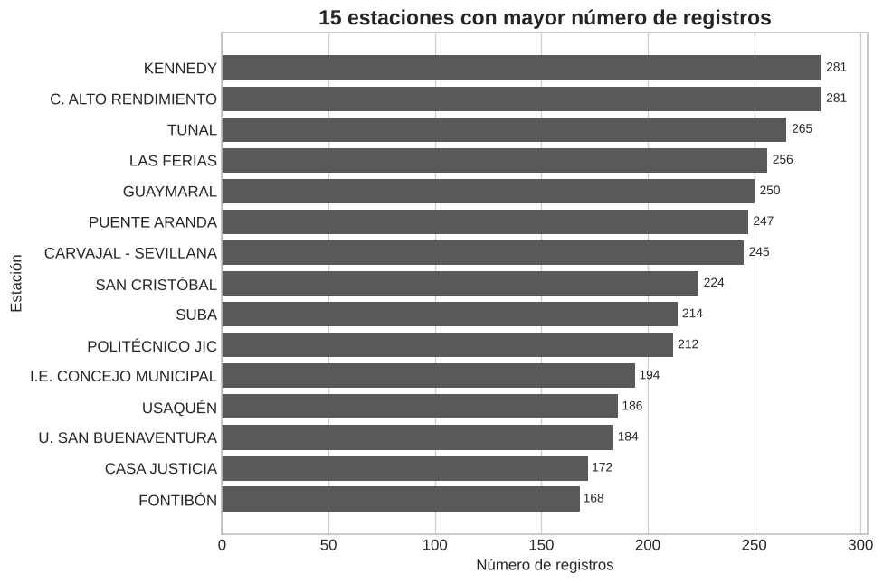
Interpretación
Las estaciones con más registros (Centro de Alto Rendimiento, Kennedy, Tunal, Las Ferias, Guaymaral, Puente Aranda) son todas de Bogotá. Son estaciones que miden muchas variables a la vez durante todo el periodo, por eso dominan el conteo.
1.1.2 Distribución de registros por variable ambiental#
frecuencia_variables = df["Variable"].value_counts().rename_axis("Variable").reset_index(name="n")
frecuencia_variables
| Variable | n | |
|---|---|---|
| 0 | PM10 | 2984 |
| 1 | PM2.5 | 1984 |
| 2 | VViento | 1254 |
| 3 | DViento | 1099 |
| 4 | SO2 | 1066 |
| 5 | PLiquida | 927 |
| 6 | TAire2 | 834 |
| 7 | O3 | 827 |
| 8 | CO | 719 |
| 9 | HAire2 | 693 |
| 10 | P | 673 |
| 11 | NO2 | 644 |
| 12 | RGlobal | 600 |
| 13 | HAire10 | 361 |
| 14 | TAire10 | 334 |
| 15 | NO | 291 |
| 16 | PST | 241 |
| 17 | HAire | 75 |
| 18 | TAire | 73 |
| 19 | RUVb | 66 |
barras_h(frecuencia_variables, "Variable", "n", "Número de registros por variable ambiental", "Número de registros", "Variable ambiental", alto=7)
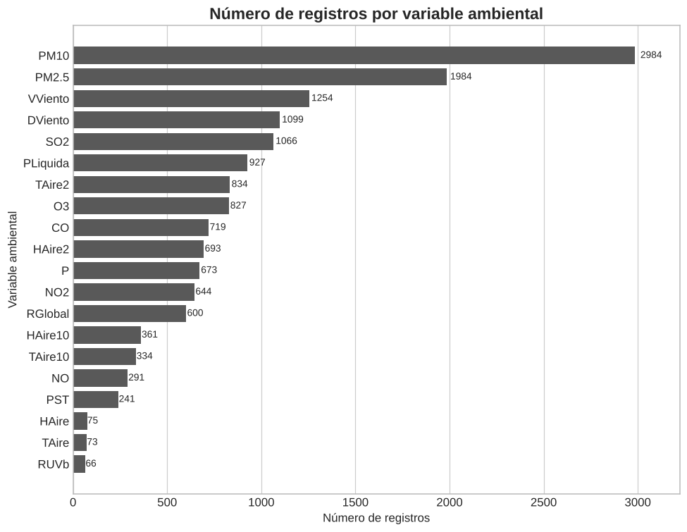
Interpretación
PM10 y PM2.5 suman casi un tercio de los registros: el material particulado es el contaminante más vigilado por su efecto en la salud. En el otro extremo, TAire, HAire y RUVb tienen menos de 80 registros cada uno, así que cualquier conclusión sobre ellos descansa en muy poca información.
1.2 Distribución temporal de los registros#
frecuencia_anios = df["Año"].value_counts().rename_axis("Año").reset_index(name="n").sort_values("Año")
frecuencia_anios
| Año | n | |
|---|---|---|
| 13 | 2011 | 647 |
| 12 | 2012 | 809 |
| 8 | 2013 | 912 |
| 10 | 2014 | 864 |
| 9 | 2015 | 903 |
| 5 | 2016 | 966 |
| 3 | 2017 | 1354 |
| 4 | 2018 | 1155 |
| 7 | 2019 | 932 |
| 2 | 2020 | 1598 |
| 1 | 2021 | 1860 |
| 0 | 2022 | 1941 |
| 11 | 2023 | 853 |
| 6 | 2024 | 951 |
fig, ax = plt.subplots()
ax.bar(frecuencia_anios["Año"].astype(str), frecuencia_anios["n"], color="#595959")
for x, v in zip(frecuencia_anios["Año"].astype(str), frecuencia_anios["n"]): ax.text(x, v * 1.01, str(v), ha="center", fontsize=9)
ax.set_ylim(0, frecuencia_anios["n"].max() * 1.08)
ax.set_title("Número de registros por año", fontweight="bold"); ax.set_xlabel("Año"); ax.set_ylabel("Número de registros")
plt.xticks(rotation=45, ha="right"); ax.grid(axis="x", visible=False)
plt.tight_layout(); plt.show()
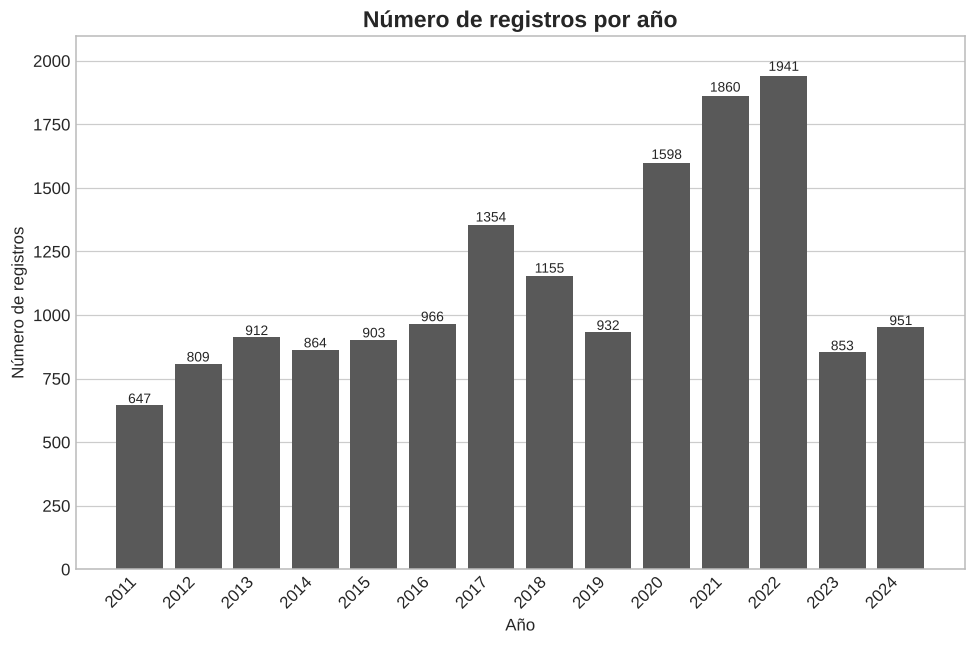
Interpretación
Los registros pasan de 647 en 2011 a 1.941 en 2022: la red de monitoreo se triplicó. La caída de 2023–2024 puede deberse a reportes incompletos o al cierre de estaciones; el dataset no permite distinguirlo.
Consecuencia para el análisis: cuando el promedio anual de una variable cambia, parte del cambio puede venir de que entraron o salieron estaciones, y no solo de cambios reales en el aire.
1.3 Estadística descriptiva y distribución de variables ambientales#
estadistica_variables = df.groupby("Variable", as_index=False).agg(n=("Promedio", "size"), Media=("Promedio", "mean"), Mediana=("Promedio", "median"), Desviacion_Estandar=("Promedio", "std"), Minimo=("Promedio", "min"), Q1=("Promedio", lambda s: s.quantile(0.25)), Q3=("Promedio", lambda s: s.quantile(0.75)), Maximo=("Promedio", "max"))
estadistica_variables
| Variable | n | Media | Mediana | Desviacion_Estandar | Minimo | Q1 | Q3 | Maximo | |
|---|---|---|---|---|---|---|---|---|---|
| 0 | CO | 719 | 811.864668 | 692.964695 | 487.497846 | 0.8 | 484.600 | 957.203556 | 3294.800000 |
| 1 | DViento | 1099 | 167.279527 | 168.800000 | 99.266649 | 0.4 | 83.650 | 248.300000 | 359.400000 |
| 2 | HAire | 75 | 66.092000 | 71.800000 | 15.987485 | 33.1 | 62.050 | 76.350000 | 92.000000 |
| 3 | HAire10 | 361 | 68.364820 | 69.100000 | 11.248304 | 28.0 | 65.000 | 75.800000 | 87.400000 |
| 4 | HAire2 | 693 | 70.517605 | 71.300000 | 11.260156 | 18.1 | 66.600 | 78.000000 | 90.500000 |
| 5 | NO | 291 | 25.003174 | 20.800000 | 18.907793 | 0.2 | 11.750 | 34.250000 | 97.200000 |
| 6 | NO2 | 644 | 26.459789 | 26.000000 | 12.492855 | 0.5 | 16.500 | 35.600000 | 65.600000 |
| 7 | O3 | 827 | 26.151963 | 25.700000 | 9.170727 | 2.0 | 19.800 | 31.800000 | 65.800000 |
| 8 | P | 673 | 701.680684 | 677.600000 | 116.808434 | 399.1 | 629.900 | 755.500000 | 1010.400000 |
| 9 | PLiquida | 927 | 9.771090 | 1.400000 | 122.038956 | 0.1 | 0.200 | 3.400000 | 3236.700000 |
| 10 | PM10 | 2984 | 37.125716 | 34.600000 | 15.350493 | 4.6 | 27.000 | 44.800000 | 162.300000 |
| 11 | PM2.5 | 1984 | 16.835610 | 15.700000 | 6.886436 | 2.7 | 12.500 | 19.800000 | 68.600000 |
| 12 | PST | 241 | 74.140664 | 72.000000 | 25.793997 | 11.1 | 56.300 | 87.400000 | 162.400000 |
| 13 | RGlobal | 600 | 185.644833 | 178.450000 | 53.865841 | 48.3 | 156.875 | 206.400000 | 431.300000 |
| 14 | RUVb | 66 | 112.395455 | 46.100000 | 111.506138 | 0.6 | 1.900 | 205.850000 | 303.800000 |
| 15 | SO2 | 1066 | 9.427033 | 6.000000 | 10.674381 | 0.1 | 3.400 | 11.000000 | 91.711673 |
| 16 | TAire | 73 | 22.619178 | 22.300000 | 4.039928 | 13.4 | 20.600 | 25.000000 | 33.500000 |
| 17 | TAire10 | 334 | 22.087126 | 22.000000 | 3.369121 | 12.4 | 20.600 | 24.050000 | 32.400000 |
| 18 | TAire2 | 834 | 20.546763 | 21.400000 | 6.169306 | 1.0 | 14.800 | 25.375000 | 44.000000 |
| 19 | VViento | 1254 | 1.370175 | 1.200000 | 0.790983 | 0.1 | 0.900 | 1.700000 | 10.200000 |
Interpretación
Las escalas son muy distintas (presión cerca de 700 mmHg, viento cerca de 1 m/s), así que cada variable solo se compara consigo misma.
En casi todos los contaminantes la media es mayor que la mediana (PM10: 37,1 frente a 34,6; SO₂: 9,4 frente a 6,0). Eso indica asimetría positiva: unas pocas estaciones con valores altos jalan el promedio hacia arriba.
PLiquida es el caso extremo: su media (9,8 mm) es siete veces la mediana (1,4 mm) por unos pocos valores enormes (máximo 3.236,7 mm). Para esta variable la mediana es la medida de tendencia central adecuada.
Distribución de las variables ambientales#
vars_orden = sorted(df["Variable"].unique())
def panel_boxplots(inicio, fin, subtitulo):
grupo = vars_orden[inicio:fin]
filas = int(np.ceil(len(grupo) / 2))
fig, axes = plt.subplots(filas, 2, figsize=(9, 3.2 * filas))
axes = np.array(axes).ravel()
for ax, v in zip(axes, grupo):
ax.boxplot(df.loc[df["Variable"] == v, "Promedio"].dropna(), widths=0.5)
ax.set_title(v, fontweight="bold", fontsize=12); ax.set_xticks([]); ax.set_ylabel("Valor promedio"); ax.grid(axis="x", visible=False)
for ax in axes[len(grupo):]: ax.axis("off")
fig.suptitle("Distribución de las variables ambientales\n" + subtitulo, fontweight="bold", fontsize=15)
plt.tight_layout(); plt.show()
panel_boxplots(0, 5, "Variables ambientales 1-5")
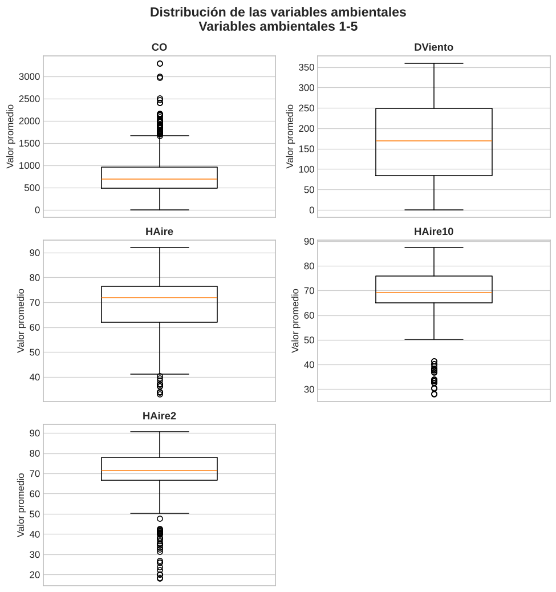
panel_boxplots(5, 10, "Variables ambientales 6-10")
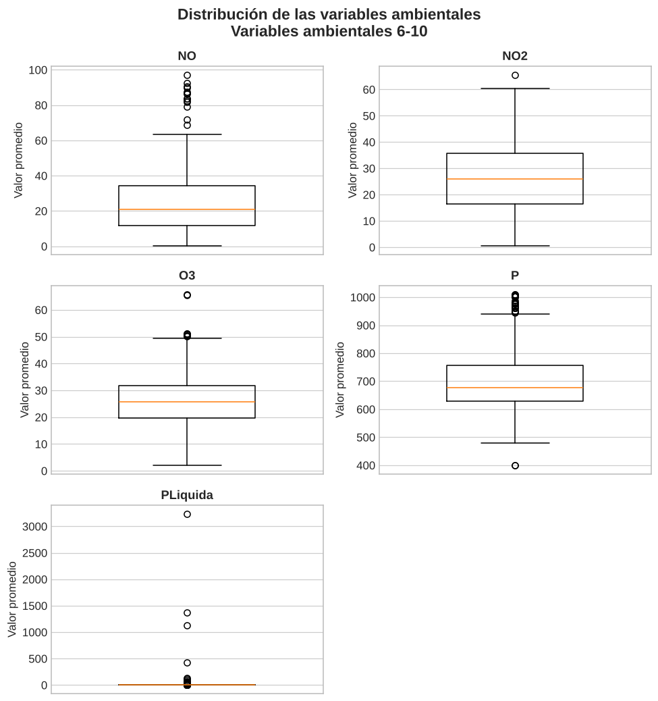
panel_boxplots(10, 15, "Variables ambientales 11-15")
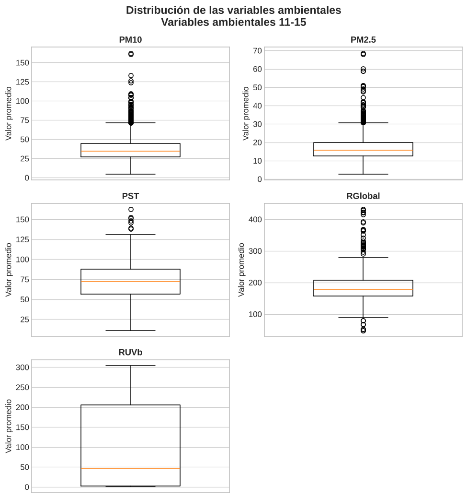
panel_boxplots(15, 20, "Variables ambientales 16-20")
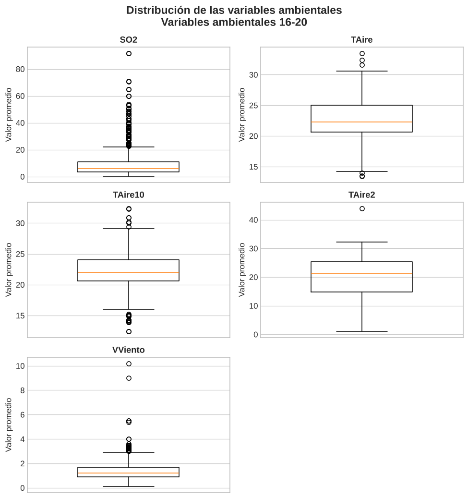
Interpretación
Los diagramas de caja confirman la asimetría: en la mayoría de las variables los puntos aislados aparecen por encima de la caja, no por debajo. RUVb tiene una caja enorme porque mezcla dos escalas de medición distintas (ver sección 1.7).
Identificación de valores atípicos#
outliers_variables = df.groupby("Variable", as_index=False).agg(Q1=("Promedio", lambda s: s.quantile(0.25)), Q3=("Promedio", lambda s: s.quantile(0.75)))
outliers_variables["IQR"] = outliers_variables["Q3"] - outliers_variables["Q1"]
outliers_variables["Limite_inferior"] = outliers_variables["Q1"] - 1.5 * outliers_variables["IQR"]
outliers_variables["Limite_superior"] = outliers_variables["Q3"] + 1.5 * outliers_variables["IQR"]
Resumen de valores atípicos#
tabla(outliers_variables)
| Variable | Q1 | Q3 | IQR | Limite_inferior | Limite_superior |
|---|---|---|---|---|---|
| CO | 484.600000 | 957.200000 | 472.600000 | -224.310000 | 1666.110000 |
| DViento | 83.650000 | 248.300000 | 164.650000 | -163.330000 | 495.280000 |
| HAire | 62.050000 | 76.350000 | 14.300000 | 40.600000 | 97.800000 |
| HAire10 | 65.000000 | 75.800000 | 10.800000 | 48.800000 | 92.000000 |
| HAire2 | 66.600000 | 78.000000 | 11.400000 | 49.500000 | 95.100000 |
| NO | 11.750000 | 34.250000 | 22.500000 | -22.000000 | 68.000000 |
| NO2 | 16.500000 | 35.600000 | 19.100000 | -12.150000 | 64.250000 |
| O3 | 19.800000 | 31.800000 | 12.000000 | 1.800000 | 49.800000 |
| P | 629.900000 | 755.500000 | 125.600000 | 441.500000 | 943.900000 |
| PLiquida | 0.200000 | 3.400000 | 3.200000 | -4.600000 | 8.200000 |
| PM10 | 27.000000 | 44.800000 | 17.800000 | 0.300000 | 71.500000 |
| PM2.5 | 12.500000 | 19.800000 | 7.300000 | 1.550000 | 30.750000 |
| PST | 56.300000 | 87.400000 | 31.100000 | 9.650000 | 134.050000 |
| RGlobal | 156.880000 | 206.400000 | 49.530000 | 82.590000 | 280.690000 |
| RUVb | 1.900000 | 205.850000 | 203.950000 | -304.030000 | 511.780000 |
| SO2 | 3.400000 | 11.000000 | 7.600000 | -8.000000 | 22.400000 |
| TAire | 20.600000 | 25.000000 | 4.400000 | 14.000000 | 31.600000 |
| TAire10 | 20.600000 | 24.050000 | 3.450000 | 15.430000 | 29.220000 |
| TAire2 | 14.800000 | 25.380000 | 10.580000 | -1.060000 | 41.240000 |
| VViento | 0.900000 | 1.700000 | 0.800000 | -0.300000 | 2.900000 |
Interpretación
Cuando el límite inferior es negativo (CO, NO, NO₂, SO₂, PLiquida) no puede haber atípicos bajos, porque esas variables no toman valores negativos. En esos casos los atípicos son solo valores extremadamente altos.
Uso el criterio de Tukey: todo lo que quede por fuera de Q1 menos 1.5 veces el IQR y Q3 más 1.5 veces el IQR lo considero atípico. Es el mismo criterio que apliqué en R.
1.4 Representatividad temporal de los datos#
representatividad_variables = df.groupby("Variable", as_index=False).agg(Media=("Representatividad Temporal", "mean"), Mediana=("Representatividad Temporal", "median"), Minimo=("Representatividad Temporal", "min"), Maximo=("Representatividad Temporal", "max")).sort_values("Media", ascending=False)
tabla(representatividad_variables)
| Variable | Media | Mediana | Minimo | Maximo |
|---|---|---|---|---|
| P | 75.370000 | 90.000000 | 0.000000 | 100.000000 |
| TAire10 | 73.990000 | 92.000000 | 0.000000 | 100.000000 |
| RUVb | 73.740000 | 89.500000 | 6.000000 | 100.000000 |
| CO | 72.590000 | 86.000000 | 0.000000 | 100.000000 |
| RGlobal | 71.560000 | 87.000000 | 0.000000 | 100.000000 |
| PLiquida | 69.800000 | 89.000000 | 0.000000 | 100.000000 |
| DViento | 68.590000 | 86.000000 | 0.000000 | 167.000000 |
| HAire10 | 68.130000 | 87.000000 | 0.000000 | 100.000000 |
| O3 | 67.620000 | 80.000000 | 0.000000 | 100.000000 |
| NO | 66.920000 | 85.000000 | 0.000000 | 100.000000 |
| PM2.5 | 66.840000 | 81.000000 | 0.000000 | 103.000000 |
| PST | 66.590000 | 79.000000 | 0.000000 | 101.000000 |
| NO2 | 66.130000 | 77.000000 | 0.000000 | 100.000000 |
| PM10 | 65.970000 | 79.000000 | 0.000000 | 115.000000 |
| TAire2 | 65.570000 | 82.000000 | 0.000000 | 100.000000 |
| HAire2 | 64.130000 | 79.000000 | 0.000000 | 100.000000 |
| SO2 | 63.470000 | 72.000000 | 1.000000 | 100.000000 |
| VViento | 62.860000 | 79.000000 | 0.000000 | 100.000000 |
| HAire | 27.490000 | 15.000000 | 3.000000 | 99.000000 |
| TAire | 23.930000 | 14.500000 | 3.000000 | 90.000000 |
barras_h(representatividad_variables, "Variable", "Media", "Representatividad temporal promedio por variable", "Representatividad temporal (%)", "Variable ambiental", alto=7, dec=1)
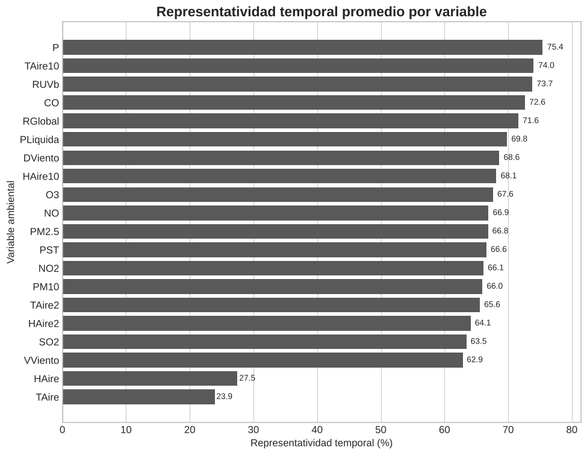
Interpretación
Casi todas las variables promedian entre 63 % y 75 % de representatividad: en un registro típico falta cerca de un tercio del año. TAire y HAire (sin altura) son la excepción, con 24 % y 27 %: sus promedios anuales se basan en pocos meses.
Solo el 56 % de los registros alcanza el 75 % de cobertura, un umbral comúnmente usado para considerar válido un promedio anual.
fuera_de_rango = df[df["Representatividad Temporal"] > 100]
print("Registros con representatividad > 100 %:", len(fuera_de_rango))
print("Máximo reportado:", df["Representatividad Temporal"].max())
Registros con representatividad > 100 %: 12
Máximo reportado: 167.0
Precaución
Una representatividad mayor a 100 % es imposible (no se puede cubrir más que el año completo). Son errores de captura en la fuente; se documentan, pero no se corrigen porque no hay forma de saber el valor real.
1.5 Distribución geográfica de las estaciones#
ubicacion_estaciones = df[["Estación", "Latitud", "Longitud"]].drop_duplicates().sort_values(["Latitud", "Longitud"])
tabla(ubicacion_estaciones.head(20), ["Estación", "Latitud", "Longitud"], decimales=4)
| Estación | Latitud | Longitud |
|---|---|---|
| IDSN | 1.216500 | -77.282900 |
| UNIMAR | 1.223800 | -77.283600 |
| CAMPANARIO | 2.438100 | -76.613000 |
| EDIFICIO EDGAR NEGRET | 2.445200 | -76.605400 |
| VIVERO LA FLORIDA | 2.476900 | -76.566700 |
| VIVERO LA FLORIDA* | 2.476900 | -76.566700 |
| ALCALDIA | 2.928900 | -75.289500 |
| CORHUILA | 2.930600 | -75.264900 |
| CORHUILA | 2.930700 | -75.265100 |
| CAM NORTE | 2.962500 | -75.297500 |
| SENA INDUSTRIAL | 2.962500 | -75.284000 |
| CAM NORTE | 2.962600 | -75.297500 |
| CAM NORTE | 2.962600 | -75.297500 |
| SANTANDER | 3.005100 | -76.481600 |
| MUNICIPIO DE SANTANDER DE QUILICHAO | 3.015800 | -76.482900 |
| MUNICIPIO DE SANTANDER DE QUILICHAO* | 3.015800 | -76.482900 |
| CALOTO | 3.034100 | -76.408500 |
| GUACHENÉ | 3.133000 | -76.392300 |
| VILLA RICA | 3.172700 | -76.459000 |
| PUERTO TEJADA | 3.229900 | -76.419300 |
Interpretación
Las estaciones están en todo el país, desde Pasto (latitud 1,2°) hacia el norte. Algunas aparecen repetidas con coordenadas casi idénticas o con un asterisco en el nombre (VIVERO LA FLORIDA*): son la misma estación reportada de dos formas.
Distribución por tipo de estación#
frecuencia_tipo_estacion = df["Tipo de Estación"].value_counts().rename_axis("Tipo de Estación").reset_index(name="n")
tabla(frecuencia_tipo_estacion, ["Tipo de estación", "Número de registros"])
| Tipo de estación | Número de registros |
|---|---|
| Fija | 14184 |
| Indicativa | 1560 |
barras_h(frecuencia_tipo_estacion, "Tipo de Estación", "n", "Distribución de registros por tipo de estación", "Número de registros", "Tipo de estación", alto=5)
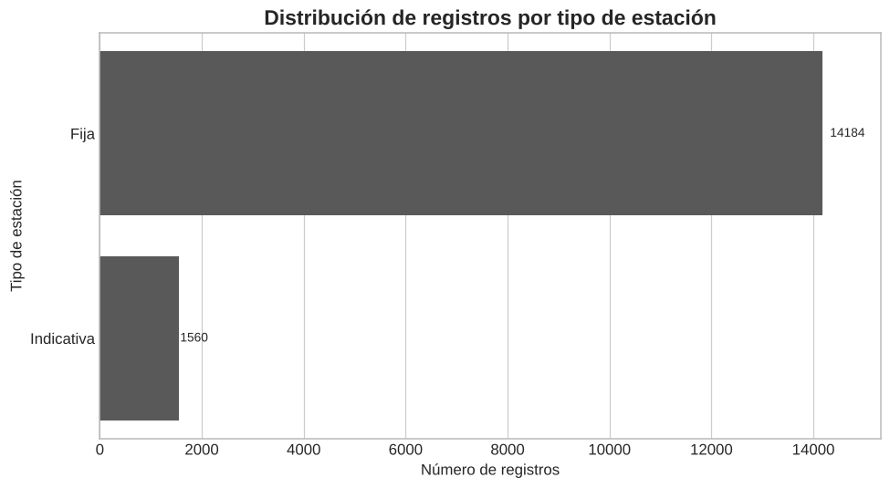
Interpretación
El 90 % de los registros viene de estaciones fijas, que operan de forma continua. Las indicativas son campañas temporales con menos cobertura en el año.
Distribución por departamento#
frecuencia_departamentos = df["Nombre del Departamento"].value_counts().rename_axis("Nombre del Departamento").reset_index(name="n")
tabla(frecuencia_departamentos, ["Departamento", "Número de registros"])
| Departamento | Número de registros |
|---|---|
| ANTIOQUIA | 4243 |
| BOGOTÁ, D.C. | 2143 |
| VALLE DEL CAUCA | 1434 |
| SANTANDER | 940 |
| BOGOTA, D.C. | 840 |
| CUNDINAMARCA | 757 |
| CESAR | 524 |
| BOYACÁ | 515 |
| MAGDALENA | 493 |
| Bogotá, D.C. | 410 |
| LA GUAJIRA | 382 |
| Cundinamarca | 367 |
| ATLÁNTICO | 327 |
| Antioquia | 322 |
| BOYACA | 282 |
| META | 244 |
| CAUCA | 145 |
| Valle del Cauca | 145 |
| Boyacá | 125 |
| BOLÍVAR | 114 |
| CALDAS | 92 |
| ATLANTICO | 84 |
| RISARALDA | 81 |
| Bolívar | 81 |
| Santander | 66 |
| CÓRDOBA | 63 |
| Magdalena | 63 |
| NORTE DE SANTANDER | 60 |
| TOLIMA | 52 |
| Cesar | 47 |
| Caldas | 44 |
| Atlántico | 30 |
| CORDOBA | 28 |
| HUILA | 25 |
| ARAUCA | 25 |
| Risaralda | 21 |
| La Guajira | 20 |
| Norte de Santander | 19 |
| Meta | 18 |
| QUINDÍO | 15 |
| Córdoba | 12 |
| NARIÑO | 11 |
| CASANARE | 11 |
| CHOCÓ | 7 |
| Cauca | 5 |
| QUINDIO | 4 |
| Huila | 4 |
| Tolima | 3 |
| Quindío | 2 |
departamentos_1 = frecuencia_departamentos.iloc[0:24]
barras_h(departamentos_1, "Nombre del Departamento", "n", "Registros por departamento", "Número de registros", "Departamento", subtitulo="Departamentos 1-24", alto=8, tam=8)
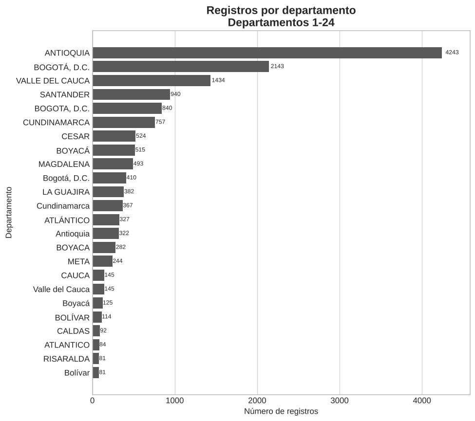
departamentos_2 = frecuencia_departamentos.iloc[24:49]
barras_h(departamentos_2, "Nombre del Departamento", "n", "Registros por departamento", "Número de registros", "Departamento", subtitulo="Departamentos 25-49", alto=8, tam=8)
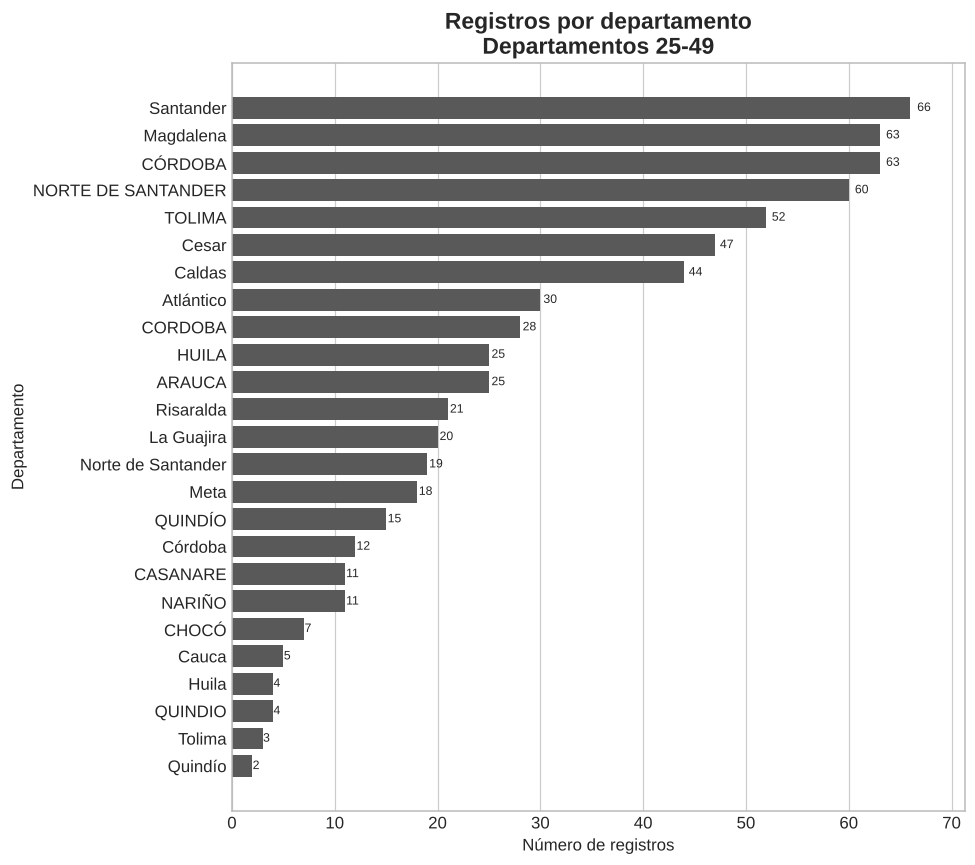
Precaución
En la tabla anterior el mismo departamento aparece escrito de varias formas: BOGOTÁ, D.C., BOGOTA, D.C. y Bogotá, D.C.; ANTIOQUIA y Antioquia, etc. Por eso el conteo da 49 «departamentos». Abajo se normalizan los nombres (sin tildes y en mayúsculas) para obtener el número real.
import unicodedata
def normalizar(t):
t = unicodedata.normalize("NFKD", str(t)).encode("ascii", "ignore").decode()
return " ".join(t.upper().split())
df["Departamento_norm"] = df["Nombre del Departamento"].map(normalizar)
df["Municipio_norm"] = df["Nombre del Municipio"].map(normalizar)
print("Departamentos: ", df["Nombre del Departamento"].nunique(), "nombres ->", df["Departamento_norm"].nunique(), "reales")
print("Municipios: ", df["Nombre del Municipio"].nunique(), "nombres ->", df["Municipio_norm"].nunique(), "reales")
deptos_norm = df["Departamento_norm"].value_counts().rename_axis("Departamento").reset_index(name="n")
barras_h(deptos_norm, "Departamento", "n", "Registros por departamento", "Número de registros", "Departamento",
subtitulo="Nombres normalizados", alto=7, tam=8)
Departamentos: 49 nombres -> 24 reales
Municipios: 339 nombres -> 193 reales
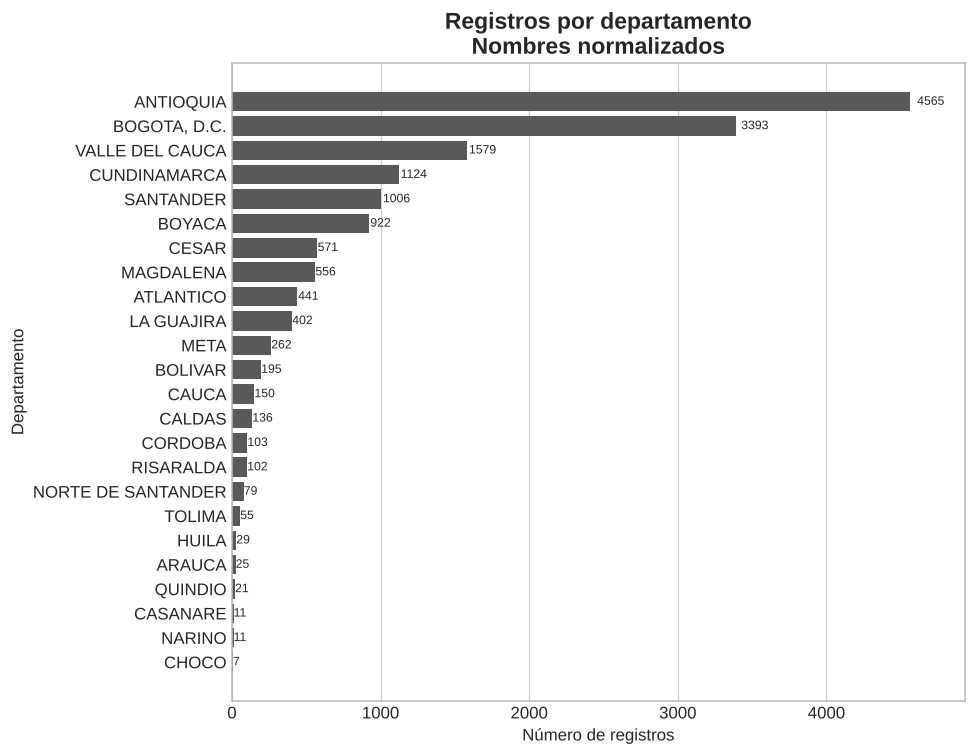
Interpretación
Al normalizar quedan 24 departamentos (no 49) y 193 municipios (no 339). Antioquia y Bogotá concentran la mitad de los registros, seguidos por Valle del Cauca y Cundinamarca. La Amazonía, la Orinoquía y gran parte del Pacífico casi no tienen monitoreo: los resultados nacionales representan sobre todo a las ciudades andinas.
Distribución por municipio#
frecuencia_municipios = df["Nombre del Municipio"].value_counts().rename_axis("Nombre del Municipio").reset_index(name="n")
tabla(frecuencia_municipios, ["Municipio", "Número de registros"])
| Municipio | Número de registros |
|---|---|
| BOGOTÁ, D.C. | 2143 |
| CALI | 1028 |
| MEDELLÍN | 930 |
| BOGOTA, D.C. | 840 |
| BUCARAMANGA | 653 |
| SOGAMOSO | 446 |
| MEDELLIN | 428 |
| GIRARDOTA | 414 |
| ITAGÜÍ | 395 |
| SANTA MARTA | 343 |
| BARRANQUILLA | 296 |
| NOBSA | 249 |
| VILLAVICENCIO | 244 |
| Bogotá, D.C. | 234 |
| SABANETA | 229 |
| BELLO | 224 |
| CALDAS | 193 |
| Bogota, D.C. | 180 |
| FLORIDABLANCA | 177 |
| LA JAGUA DE IBIRICO | 170 |
| YUMBO | 161 |
| BARBOSA | 155 |
| EL PASO | 146 |
| PALMIRA | 133 |
| ENVIGADO | 122 |
| BARRANCAS | 122 |
| MOSQUERA | 111 |
| SOACHA | 106 |
| SOLEDAD | 99 |
| RIONEGRO | 93 |
| CHIRIGUANÁ | 91 |
| CIÉNAGA | 84 |
| MANIZALES | 84 |
| CARTAGENA DE INDIAS | 73 |
| CAUCASIA | 73 |
| Medellín | 72 |
| ITAGUI | 71 |
| ALBANIA | 70 |
| CIENAGA | 66 |
| COPACABANA | 63 |
| Medellin | 57 |
| FUNZA | 51 |
| POPAYAN | 51 |
| AGUSTÍN CODAZZI | 50 |
| COGUA | 49 |
| GUARNE | 49 |
| HATO NUEVO | 49 |
| PIEDECUESTA | 48 |
| SONSON | 48 |
| FONSECA | 44 |
| IBAGUÉ | 44 |
| Soacha | 44 |
| Cartagena De Indias | 44 |
| LA CALERA | 43 |
| Sogamoso | 43 |
| Bucaramanga | 43 |
| RIOHACHA | 42 |
| PAIPA | 42 |
| Santa Marta | 42 |
| CANDELARIA | 41 |
| PEREIRA | 40 |
| YONDO | 40 |
| MONTERIA | 40 |
| SOPÓ | 39 |
| SAN JUAN DEL CESAR | 39 |
| ZIPAQUIRÁ | 37 |
| MONTERÍA | 37 |
| TURBACO | 37 |
| RÁQUIRA | 36 |
| NEMOCON | 35 |
| MARINILLA | 35 |
| Yumbo | 35 |
| Girardota | 35 |
| AMAGA | 34 |
| SIBATÉ | 33 |
| CAJICA | 33 |
| CUCUTA | 33 |
| LA ESTRELLA | 30 |
| TOCANCIPÁ | 30 |
| LA PINTADA | 30 |
| JAMUNDI | 30 |
| Nobsa | 30 |
| Manizales | 30 |
| MADRID | 29 |
| SANTANDER DE QUILICHAO | 29 |
| YARUMAL | 29 |
| GIRON | 29 |
| Barranquilla | 28 |
| AMAGÁ | 27 |
| VALLEDUPAR | 27 |
| CAJICÁ | 27 |
| CÚCUTA | 27 |
| COTA | 26 |
| NEIVA | 25 |
| RAQUIRA | 24 |
| Palmira | 24 |
| PUERTO BERRÍO | 23 |
| TULUA | 23 |
| Mosquera | 23 |
| Piedecuesta | 23 |
| EL BAGRE | 22 |
| TAUSA | 22 |
| SONSÓN | 22 |
| ARMENIA | 21 |
| YOPAL | 21 |
| La Calera | 21 |
| Turbana | 21 |
| Rionegro | 21 |
| PUERTO NARE | 20 |
| JARDIN | 20 |
| BECERRIL | 19 |
| POPAYÁN | 19 |
| Buga | 19 |
| NEMOCÓN | 18 |
| SOPETRÁN | 18 |
| Floridablanca | 18 |
| SANTA FE DE ANTIOQUIA | 18 |
| Villavicencio | 18 |
| Paipa | 18 |
| DOSQUEBRADAS | 17 |
| LA VIRGINIA | 16 |
| FREDONIA | 16 |
| SAN JOSE DE LA MONTAÑA | 16 |
| URIBIA | 16 |
| Cartago | 16 |
| Turbaco | 16 |
| Itagüí | 16 |
| San José de Cúcuta | 16 |
| ARAUCA | 15 |
| GIRÓN | 15 |
| Madrid | 15 |
| El Paso | 15 |
| SEGOVIA | 14 |
| ZIPAQUIRA | 14 |
| SIBATE | 14 |
| TOCANCIPA | 14 |
| SOPO | 14 |
| Cogua | 14 |
| Funza | 14 |
| La Jagua De Ibirico | 14 |
| CALOTO | 13 |
| GÓMEZ PLATA | 13 |
| BURITICÁ | 13 |
| Itagui | 13 |
| Tocancipa | 13 |
| Tocancipá | 13 |
| Bello | 12 |
| Raquira | 12 |
| Tausa | 12 |
| Lenguazaque | 12 |
| Ráquira | 12 |
| PASTO | 11 |
| MIRANDA | 11 |
| Barrancas | 11 |
| Zipaquirá | 11 |
| Ciénaga | 11 |
| SANTA FÉ DE ANTIOQUIA | 10 |
| ZARAGOZA | 10 |
| ENTRERRÍOS | 10 |
| GUACHENÉ | 10 |
| OLAYA | 10 |
| LIBORINA | 10 |
| Envigado | 10 |
| Zipaquira | 10 |
| Suesca | 10 |
| Cienaga | 10 |
| Tunja | 10 |
| Facatativá | 10 |
| Fusagasugá | 10 |
| SAN PEDRO DE LOS MILAGROS | 9 |
| SANTA ROSA DE OSOS | 9 |
| CHIRIGUANA | 9 |
| Sopo | 9 |
| Facatativa | 9 |
| Cajica | 9 |
| Pereira | 9 |
| LA PAZ | 8 |
| SAN JERÓNIMO | 8 |
| SANTA ROSA DE CABAL | 8 |
| CISNEROS | 8 |
| ANDES | 8 |
| TÁMESIS | 8 |
| MALAMBO | 8 |
| JAMUNDÍ | 8 |
| PUERTO COLOMBIA | 8 |
| MONTELÍBANO | 8 |
| PUERTO BERRIO | 8 |
| GOMEZ PLATA | 8 |
| Candelaria | 8 |
| Barbosa | 8 |
| La Estrella | 8 |
| Cota | 8 |
| Girardot | 8 |
| Cali | 8 |
| Zarzal | 8 |
| Sopó | 8 |
| Tuluá | 8 |
| Sonsón | 8 |
| QUIBDÓ | 7 |
| Tulua | 7 |
| Sibate | 7 |
| Ubate | 7 |
| Sibaté | 7 |
| Ubaté | 7 |
| PUERTO TEJADA | 6 |
| VILLA RICA | 6 |
| TITIRIBÍ | 6 |
| NECHÍ | 6 |
| VALDIVIA | 6 |
| REMEDIOS | 6 |
| CIUDAD BOLÍVAR | 6 |
| PUERTO TRIUNFO | 6 |
| TARSO | 6 |
| DON MATÍAS | 6 |
| IBAGUE | 6 |
| BURITICA | 6 |
| Copacabana | 6 |
| Caldas | 6 |
| Nemocon | 6 |
| Cucunuba | 6 |
| Dosquebradas | 6 |
| Santa Rosa De Cabal | 6 |
| Guarne | 6 |
| Nemocón | 6 |
| Guachetá | 6 |
| Cucunubá | 6 |
| HISPANIA | 5 |
| VEGACHÍ | 5 |
| SAN ANDRÉS DE CUERQUÍA | 5 |
| SABANALARGA | 5 |
| TOLEDO | 5 |
| YALÍ | 5 |
| ANGOSTURA | 5 |
| GUADALUPE | 5 |
| BRICEÑO | 5 |
| SAN JOSÉ DE LA MONTAÑA | 5 |
| ANZÁ | 5 |
| CÁCERES | 5 |
| CAICEDO | 5 |
| CAMPAMENTO | 5 |
| JERICÓ | 5 |
| Fusagasuga | 5 |
| Cajicá | 5 |
| BELMIRA | 4 |
| SANTA BÁRBARA | 4 |
| TULUÁ | 4 |
| LA DORADA | 4 |
| SUTATAUSA | 4 |
| AGUSTIN CODAZZI | 4 |
| CHÍA | 4 |
| GIRARDOT | 4 |
| Sabaneta | 4 |
| Neiva | 4 |
| Chia | 4 |
| Guacheta | 4 |
| Caucasia | 4 |
| Puerto Nare | 4 |
| Maceo | 4 |
| Sonson | 4 |
| Marinilla | 4 |
| Chinchina | 4 |
| Chiriguana | 4 |
| Valledupar | 4 |
| Uribia | 4 |
| Jamundi | 4 |
| Puerto Libertador | 4 |
| Chiriguaná | 4 |
| Santiago de Cali | 4 |
| Jamundí | 4 |
| Chía | 4 |
| Guatapé | 4 |
| BUENAVENTURA | 3 |
| MONTEBELLO | 3 |
| DONMATÍAS | 3 |
| AMALFI | 3 |
| CARACOLÍ | 3 |
| CAROLINA | 3 |
| YOLOMBÓ | 3 |
| ITUANGO | 3 |
| JARDÍN | 3 |
| ANGELÓPOLIS | 3 |
| BETULIA | 3 |
| CONCORDIA | 3 |
| EBÉJICO | 3 |
| HELICONIA | 3 |
| PUEBLORRICO | 3 |
| VALPARAÍSO | 3 |
| YONDÓ | 3 |
| BETANIA | 3 |
| TARAZÁ | 3 |
| La Dorada | 3 |
| Albania | 3 |
| Cucuta | 3 |
| Popayan | 3 |
| SANTUARIO | 2 |
| MACEO | 2 |
| GUADALAJARA DE BUGA | 2 |
| CHINCHINA | 2 |
| SAN JOSE DE URE | 2 |
| ARJONA | 2 |
| PUERTO LIBERTADOR | 2 |
| TURBANA | 2 |
| SAN JOSÉ DE URÉ | 2 |
| Yondo | 2 |
| Amaga | 2 |
| Andes | 2 |
| Puerto Berrio | 2 |
| Marmato | 2 |
| Becerril | 2 |
| Agustin Codazzi | 2 |
| Santander De Quilichao | 2 |
| Montelibano | 2 |
| San Jose De Ure | 2 |
| Ibagué | 2 |
| Armenia | 2 |
| Agustín Codazzi | 2 |
| Yondó | 2 |
| Amagá | 2 |
| Montelíbano | 2 |
| San José De Uré | 2 |
| Chinchiná | 2 |
| Santa Rosa De Osos | 2 |
| La Ceja | 2 |
| SAN LUIS | 1 |
| LÍBANO | 1 |
| SALGAR | 1 |
| ANORÍ | 1 |
| VENECIA | 1 |
| BUGA | 1 |
| SAN JOSÉ | 1 |
| BELALCÁZAR | 1 |
| Palestina | 1 |
| Villamaria | 1 |
| Hato Nuevo | 1 |
| Fonseca | 1 |
| Ibague | 1 |
| Soledad | 1 |
| Malambo | 1 |
| Anserma | 1 |
top_municipios = frecuencia_municipios.nlargest(24, "n")
barras_h(top_municipios, "Nombre del Municipio", "n", "Municipios con mayor número de registros", "Número de registros", "Municipio", subtitulo="24 municipios con mayor representación en la base de datos", alto=8, tam=8)
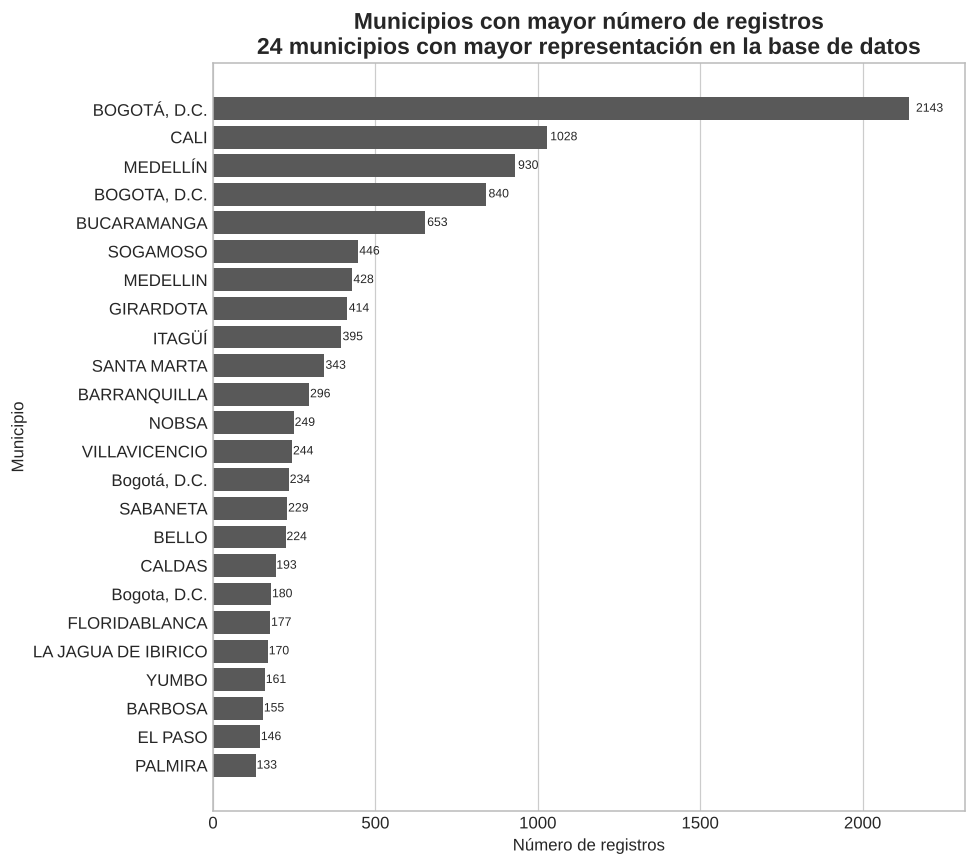
Interpretación
Los municipios con más registros son las capitales con redes de monitoreo grandes: Bogotá, Cali, Medellín y Bucaramanga. Aparecen también municipios industriales o mineros como Sogamoso, Nobsa (cementeras y siderurgia) y La Jagua de Ibirico (carbón), donde la vigilancia responde a fuentes de emisión específicas.
1.6 Análisis específico de contaminantes#
Objetivo específico 1 · evolución de los contaminantes.
def estadisticos(serie, con_media=True):
nombres = ["Mínimo", "Primer cuartil", "Mediana", "Media", "Tercer cuartil", "Máximo"]
valores = [serie.min(), serie.quantile(0.25), serie.median(), serie.mean(), serie.quantile(0.75), serie.max()]
if not con_media: nombres, valores = ["Mínimo", "Primer cuartil", "Mediana", "Máximo"], [serie.min(), serie.quantile(0.25), serie.median(), serie.max()]
return pd.DataFrame({"Estadistico": nombres, "Valor": valores})
def promedio_anual(d, nombre): return d.groupby("Año", as_index=False).agg(**{nombre: ("Promedio", "mean"), "Registros": ("Promedio", "size")}).sort_values("Año").reset_index(drop=True)
def grafico_anual(d, col, titulo, subtitulo, ylab, anios=None):
fig, ax = plt.subplots()
ax.plot(d["Año"], d[col], linewidth=1.2, marker="o", markersize=6, color="black")
for x, y in zip(d["Año"], d[col]): ax.text(x, y + (d[col].max() - d[col].min() + 1) * 0.03, f"{y:.1f}", ha="center", fontsize=9)
ax.set_xticks(list(anios) if anios is not None else sorted(d["Año"].unique()))
ax.set_ylim(top=d[col].max() * 1.08)
ax.set_title(titulo + "\n" + subtitulo, fontweight="bold"); ax.set_xlabel("Año"); ax.set_ylabel(ylab)
plt.xticks(rotation=45, ha="right")
plt.tight_layout(); plt.show()
def cambio_porcentual(d, col, a1=2011, a2=2024):
s = d.set_index("Año")[col]
if a1 not in s.index or a2 not in s.index: return pd.DataFrame({"Periodo": ["N/A"], "Promedio_2011": [np.nan], "Promedio_2024": [np.nan], "Cambio_porcentual": [np.nan]})
v1, v2 = s.loc[a1], s.loc[a2]
return pd.DataFrame({"Periodo": [f"{a1}-{a2}"], "Promedio_2011": [v1], "Promedio_2024": [v2], "Cambio_porcentual": [(v2 - v1) / v1 * 100]})
PM10#
pm10 = df[df["Variable"] == "PM10"].copy()
print("Registros de PM10:", len(pm10))
estadistica_pm10 = estadisticos(pm10["Promedio"])
tabla(estadistica_pm10, ["Estadístico", "Valor"])
Registros de PM10: 2984
| Estadístico | Valor |
|---|---|
| Mínimo | 4.600000 |
| Primer cuartil | 27.000000 |
| Mediana | 34.600000 |
| Media | 37.130000 |
| Tercer cuartil | 44.800000 |
| Máximo | 162.300000 |
Interpretación
PM10 tiene 2.984 registros. La media (37,1 µg/m³) es algo mayor que la mediana (34,6 µg/m³), lo que indica asimetría positiva: algunas estaciones con valores altos, como el máximo de 162,3 µg/m³, elevan el promedio.
pm10_anual = promedio_anual(pm10, "Promedio_PM10")
tabla(pm10_anual, ["Año", "Promedio PM10", "Número de registros"])
| Año | Promedio PM10 | Número de registros |
|---|---|---|
| 2011 | 42.660000 | 143 |
| 2012 | 44.600000 | 162 |
| 2013 | 42.070000 | 161 |
| 2014 | 43.640000 | 164 |
| 2015 | 44.400000 | 182 |
| 2016 | 43.650000 | 177 |
| 2017 | 37.700000 | 227 |
| 2018 | 37.030000 | 221 |
| 2019 | 35.780000 | 211 |
| 2020 | 35.900000 | 267 |
| 2021 | 33.200000 | 251 |
| 2022 | 31.880000 | 263 |
| 2023 | 30.890000 | 280 |
| 2024 | 30.830000 | 275 |
grafico_anual(pm10_anual, "Promedio_PM10", "Evolución del promedio anual de PM10", "Periodo 2011-2024", "Promedio de PM10", anios=range(2011, 2025))
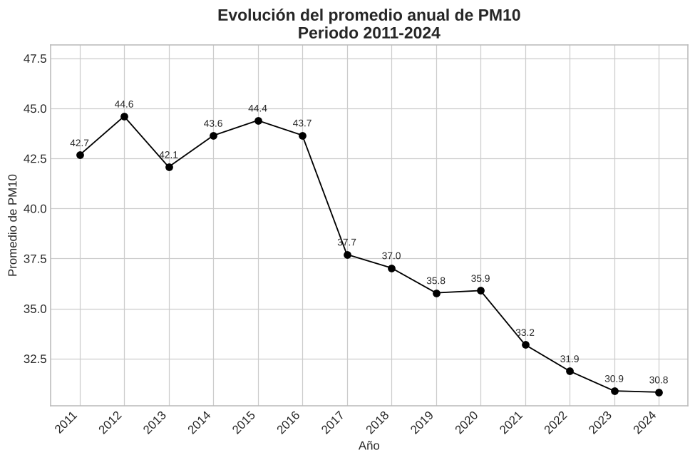
Interpretación
El PM10 se mantuvo cerca de 43–44 µg/m³ entre 2011 y 2016 y desde 2017 baja de forma sostenida hasta 30,8 µg/m³ en 2024. Es la tendencia más estable de todos los contaminantes.
Como referencia, la Resolución 2254 de 2017 fija un nivel anual de 50 µg/m³ y una meta de 30 µg/m³ a 2030: el promedio nacional estuvo por debajo del nivel vigente todos los años y en 2024 quedó muy cerca de la meta futura. Es solo una referencia, porque el promedio mezcla registros de 1 y 24 horas de exposición.
tabla_cambio_pm10 = cambio_porcentual(pm10_anual, "Promedio_PM10")
tabla(tabla_cambio_pm10, ["Periodo", "Promedio 2011", "Promedio 2024", "Cambio (%)"])
| Periodo | Promedio 2011 | Promedio 2024 | Cambio (%) |
|---|---|---|---|
| 2011-2024 | 42.660000 | 30.830000 | -27.750000 |
Interpretación
Entre 2011 y 2024 el PM10 bajó 27,75 %.
PM2.5#
pm25 = df[df["Variable"] == "PM2.5"].copy()
print("Registros de PM2.5:", len(pm25))
estadistica_pm25 = estadisticos(pm25["Promedio"])
tabla(estadistica_pm25, ["Estadístico", "Valor"])
Registros de PM2.5: 1984
| Estadístico | Valor |
|---|---|
| Mínimo | 2.700000 |
| Primer cuartil | 12.500000 |
| Mediana | 15.700000 |
| Media | 16.840000 |
| Tercer cuartil | 19.800000 |
| Máximo | 68.600000 |
Interpretación
El PM2.5 tiene menos registros (1.984) y valores más bajos que el PM10, lo esperable porque es la fracción fina del material particulado. La media (16,8 µg/m³) y la mediana (15,7 µg/m³) son cercanas.
pm25_anual = promedio_anual(pm25, "Promedio_PM25")
tabla(pm25_anual, ["Año", "Promedio PM2.5", "Número de registros"])
| Año | Promedio PM2.5 | Número de registros |
|---|---|---|
| 2011 | 21.460000 | 19 |
| 2012 | 23.880000 | 33 |
| 2013 | 22.160000 | 40 |
| 2014 | 21.480000 | 55 |
| 2015 | 22.390000 | 59 |
| 2016 | 23.680000 | 65 |
| 2017 | 18.580000 | 142 |
| 2018 | 16.530000 | 162 |
| 2019 | 18.510000 | 139 |
| 2020 | 16.980000 | 233 |
| 2021 | 15.490000 | 240 |
| 2022 | 15.390000 | 258 |
| 2023 | 14.000000 | 268 |
| 2024 | 14.730000 | 271 |
grafico_anual(pm25_anual, "Promedio_PM25", "Evolución del promedio anual de PM2.5", "Periodo 2011-2024", "Promedio de PM2.5", anios=range(2011, 2025))
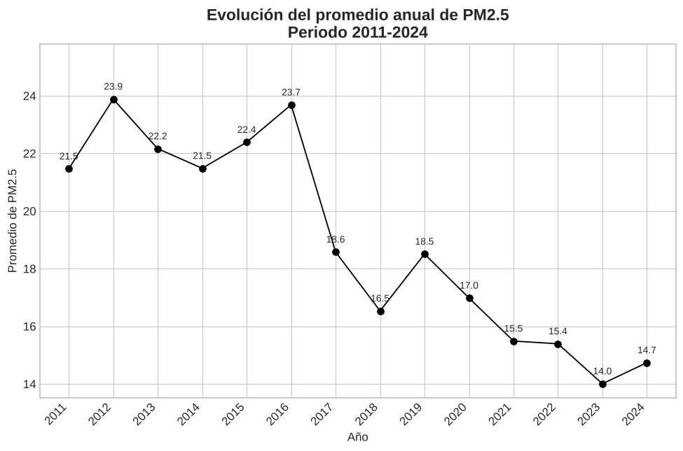
Interpretación
El PM2.5 cae con fuerza en 2017, de 23,7 a 18,6 µg/m³. Ese salto coincide con que el número de registros se duplicó (de 65 a 142): al entrar estaciones nuevas, posiblemente en zonas menos contaminadas, el promedio puede bajar sin que el aire haya mejorado en las estaciones existentes. Es un efecto de composición de la red que este EDA no puede descartar.
Desde 2023 el promedio nacional (14,0–14,7 µg/m³) está por debajo de la meta a 2030 de la Res. 2254/2017 (15 µg/m³).
tabla_cambio_pm25 = cambio_porcentual(pm25_anual, "Promedio_PM25")
tabla(tabla_cambio_pm25, ["Periodo", "Promedio 2011", "Promedio 2024", "Cambio (%)"])
| Periodo | Promedio 2011 | Promedio 2024 | Cambio (%) |
|---|---|---|---|
| 2011-2024 | 21.460000 | 14.730000 | -31.350000 |
Interpretación
Entre 2011 y 2024 el PM2.5 bajó 31,35 %.
NO₂#
no2 = df[df["Variable"] == "NO2"].copy()
print("Registros de NO2:", len(no2))
estadistica_no2 = estadisticos(no2["Promedio"])
tabla(estadistica_no2, ["Estadístico", "Valor"])
Registros de NO2: 644
| Estadístico | Valor |
|---|---|
| Mínimo | 0.500000 |
| Primer cuartil | 16.500000 |
| Mediana | 26.000000 |
| Media | 26.460000 |
| Tercer cuartil | 35.600000 |
| Máximo | 65.600000 |
Interpretación
El NO₂ tiene solo 644 registros: entre 20 y 59 por año. La media (26,5 µg/m³) y la mediana (26,0 µg/m³) son prácticamente iguales, una distribución bastante simétrica.
no2_anual = promedio_anual(no2, "Promedio_NO2")
tabla(no2_anual, ["Año", "Promedio NO2", "Número de registros"])
| Año | Promedio NO2 | Número de registros |
|---|---|---|
| 2011 | 36.280000 | 40 |
| 2012 | 31.770000 | 48 |
| 2013 | 30.520000 | 43 |
| 2014 | 24.850000 | 49 |
| 2015 | 24.360000 | 53 |
| 2016 | 28.280000 | 48 |
| 2017 | 21.320000 | 59 |
| 2018 | 24.270000 | 30 |
| 2019 | 23.320000 | 20 |
| 2020 | 24.390000 | 49 |
| 2021 | 24.310000 | 57 |
| 2022 | 26.130000 | 50 |
| 2023 | 25.050000 | 48 |
| 2024 | 26.880000 | 50 |
grafico_anual(no2_anual, "Promedio_NO2", "Evolución del promedio anual de NO2", "Periodo 2011-2024", "Promedio de NO2", anios=range(2011, 2025))
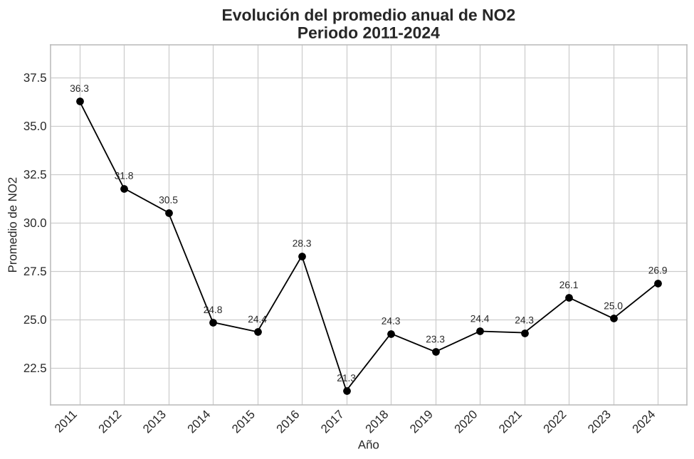
Interpretación
El NO₂ bajó con fuerza entre 2011 y 2017 (de 36,3 a 21,3 µg/m³), pero desde entonces sube lentamente hasta 26,9 µg/m³ en 2024. El cambio total esconde ese repunte. El NO₂ proviene sobre todo de la combustión vehicular, así que el repunte podría reflejar el aumento del parque automotor. Todos los valores están muy por debajo del nivel anual vigente (60 µg/m³) y de la meta 2030 (40 µg/m³).
tabla_cambio_no2 = cambio_porcentual(no2_anual, "Promedio_NO2")
tabla(tabla_cambio_no2, ["Periodo", "Promedio 2011", "Promedio 2024", "Cambio (%)"])
| Periodo | Promedio 2011 | Promedio 2024 | Cambio (%) |
|---|---|---|---|
| 2011-2024 | 36.280000 | 26.880000 | -25.900000 |
Interpretación
Entre 2011 y 2024 el NO₂ bajó 25,9 %, pero con el repunte desde 2017 descrito arriba.
O₃#
o3 = df[df["Variable"] == "O3"].copy()
print("Registros de O3:", len(o3))
estadistica_o3 = estadisticos(o3["Promedio"])
tabla(estadistica_o3, ["Estadístico", "Valor"])
Registros de O3: 827
| Estadístico | Valor |
|---|---|
| Mínimo | 2.000000 |
| Primer cuartil | 19.800000 |
| Mediana | 25.700000 |
| Media | 26.150000 |
| Tercer cuartil | 31.800000 |
| Máximo | 65.800000 |
Interpretación
El ozono tiene 827 registros, con media y mediana cercanas (26,2 y 25,7 µg/m³).
o3_anual = promedio_anual(o3, "Promedio_O3")
tabla(o3_anual, ["Año", "Promedio O3", "Número de registros"])
| Año | Promedio O3 | Número de registros |
|---|---|---|
| 2011 | 23.940000 | 40 |
| 2012 | 27.550000 | 58 |
| 2013 | 27.860000 | 54 |
| 2014 | 29.010000 | 58 |
| 2015 | 32.640000 | 66 |
| 2016 | 26.740000 | 70 |
| 2017 | 24.230000 | 107 |
| 2018 | 23.940000 | 48 |
| 2019 | 25.000000 | 35 |
| 2020 | 25.920000 | 55 |
| 2021 | 22.680000 | 57 |
| 2022 | 24.930000 | 65 |
| 2023 | 23.530000 | 55 |
| 2024 | 27.290000 | 59 |
grafico_anual(o3_anual, "Promedio_O3", "Evolución del promedio anual de O3", "Periodo 2011-2024", "Promedio de O3", anios=range(2011, 2025))
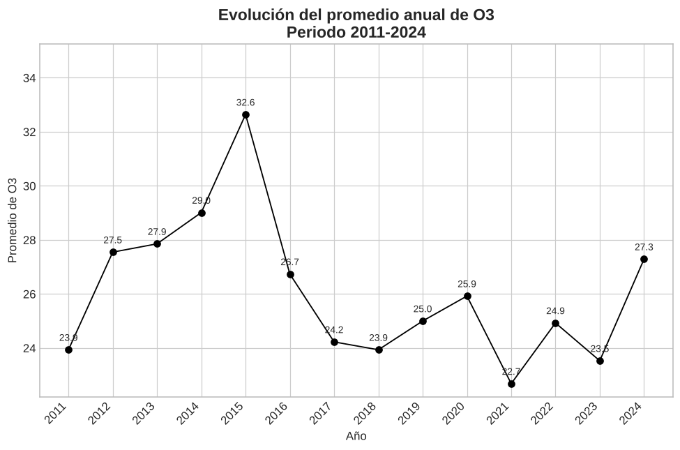
Interpretación
El ozono no muestra una tendencia clara: sube hasta 32,6 µg/m³ en 2015, baja hasta 22,7 µg/m³ en 2021 y vuelve a subir en 2024. El O₃ no se emite directamente: se forma en la atmósfera a partir de óxidos de nitrógeno y compuestos orgánicos con la radiación solar. Por eso puede subir aunque bajen otros contaminantes.
tabla_cambio_o3 = cambio_porcentual(o3_anual, "Promedio_O3")
tabla(tabla_cambio_o3, ["Periodo", "Promedio 2011", "Promedio 2024", "Cambio (%)"])
| Periodo | Promedio 2011 | Promedio 2024 | Cambio (%) |
|---|---|---|---|
| 2011-2024 | 23.940000 | 27.290000 | 14.000000 |
Interpretación
El ozono es el único contaminante que aumentó entre 2011 y 2024 (+14 %).
SO₂#
so2 = df[df["Variable"] == "SO2"].copy()
print("Registros de SO2:", len(so2))
estadistica_so2 = estadisticos(so2["Promedio"])
tabla(estadistica_so2, ["Estadístico", "Valor"])
Registros de SO2: 1066
| Estadístico | Valor |
|---|---|
| Mínimo | 0.100000 |
| Primer cuartil | 3.400000 |
| Mediana | 6.000000 |
| Media | 9.430000 |
| Tercer cuartil | 11.000000 |
| Máximo | 91.710000 |
Interpretación
El SO₂ es muy asimétrico: la media (9,4 µg/m³) es mucho mayor que la mediana (6,0 µg/m³) y el máximo llega a 91,7 µg/m³. Unas pocas estaciones cercanas a fuentes industriales concentran los valores altos.
so2_anual = promedio_anual(so2, "Promedio_SO2")
tabla(so2_anual, ["Año", "Promedio SO2", "Número de registros"])
| Año | Promedio SO2 | Número de registros |
|---|---|---|
| 2011 | 15.140000 | 43 |
| 2012 | 11.260000 | 39 |
| 2013 | 6.840000 | 39 |
| 2014 | 5.920000 | 33 |
| 2015 | 7.260000 | 36 |
| 2016 | 15.920000 | 52 |
| 2017 | 10.350000 | 96 |
| 2018 | 8.340000 | 60 |
| 2019 | 9.800000 | 70 |
| 2020 | 8.710000 | 113 |
| 2021 | 7.810000 | 122 |
| 2022 | 7.140000 | 116 |
| 2023 | 10.080000 | 122 |
| 2024 | 9.860000 | 125 |
grafico_anual(so2_anual, "Promedio_SO2", "Evolución del promedio anual de SO2", "Periodo 2011-2024", "Promedio de SO2", anios=range(2011, 2025))
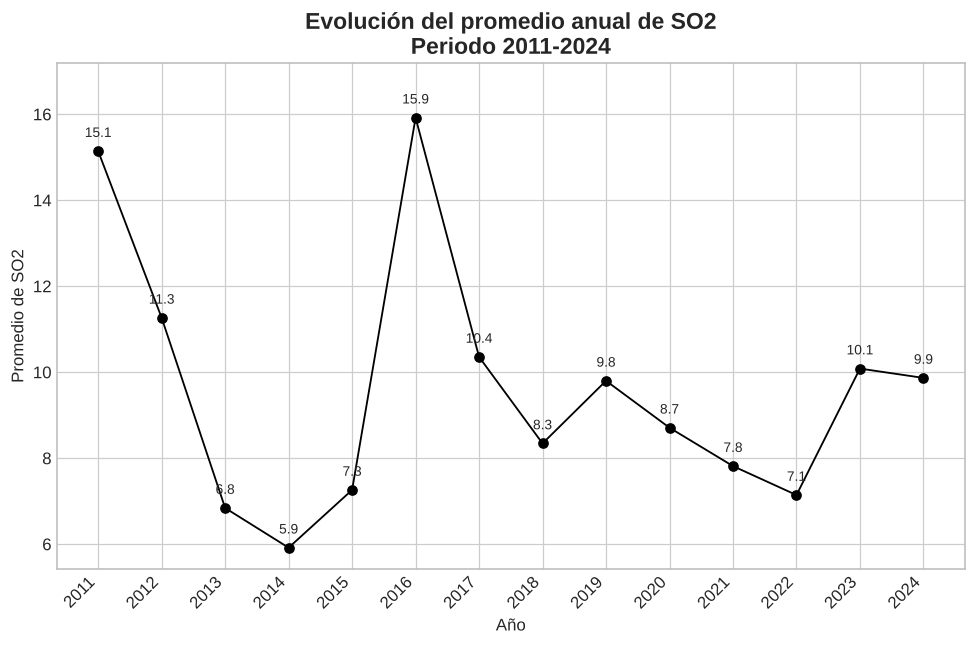
Interpretación
La serie del SO₂ es muy irregular: baja a 5,9 µg/m³ en 2014 y sube a 15,9 µg/m³ en 2016. Ese comportamiento de sierra sugiere que el promedio depende de pocas estaciones industriales que entran y salen de la red.
tabla_cambio_so2 = cambio_porcentual(so2_anual, "Promedio_SO2")
tabla(tabla_cambio_so2, ["Periodo", "Promedio 2011", "Promedio 2024", "Cambio (%)"])
| Periodo | Promedio 2011 | Promedio 2024 | Cambio (%) |
|---|---|---|---|
| 2011-2024 | 15.140000 | 9.860000 | -34.840000 |
Interpretación
La caída de 34,8 % es la mayor de los cinco contaminantes, pero por la irregularidad de la serie no debe leerse como una mejora clara y sostenida.
Comparación del cambio porcentual de los contaminantes#
cambios = []
for nombre, dat in [("PM10", pm10_anual), ("PM2.5", pm25_anual), ("NO2", no2_anual), ("O3", o3_anual), ("SO2", so2_anual)]:
s = dat.set_index("Año").iloc[:, 0]
if 2011 in s.index and 2024 in s.index:
v1, v2 = s.loc[2011], s.loc[2024]
cambios.append({"Contaminante": nombre, "Promedio_2011": v1, "Promedio_2024": v2, "Cambio_porcentual": (v2 - v1) / v1 * 100})
comparacion_contaminantes = pd.DataFrame(cambios)
tabla(comparacion_contaminantes, ["Contaminante", "Promedio 2011", "Promedio 2024", "Cambio (%)"])
| Contaminante | Promedio 2011 | Promedio 2024 | Cambio (%) |
|---|---|---|---|
| PM10 | 42.660000 | 30.830000 | -27.750000 |
| PM2.5 | 21.460000 | 14.730000 | -31.350000 |
| NO2 | 36.280000 | 26.880000 | -25.900000 |
| O3 | 23.940000 | 27.290000 | 14.000000 |
| SO2 | 15.140000 | 9.860000 | -34.840000 |
d = comparacion_contaminantes.sort_values("Cambio_porcentual")
fig, ax = plt.subplots()
ax.barh(d["Contaminante"], d["Cambio_porcentual"], color="#595959")
for y, v in zip(d["Contaminante"], d["Cambio_porcentual"]): ax.text(v * 1.03, y, f"{v:.1f}%", va="center", ha="right" if v < 0 else "left", fontsize=9)
ax.set_xlim(d["Cambio_porcentual"].min() * 1.15, d["Cambio_porcentual"].max() * 1.15)
ax.axvline(0, color="black", linewidth=0.8)
ax.set_title("Cambio porcentual de los principales contaminantes\nVariación del promedio entre 2011 y 2024", fontweight="bold")
ax.set_xlabel("Cambio porcentual (%)"); ax.set_ylabel("Contaminante"); ax.grid(axis="y", visible=False)
plt.tight_layout(); plt.show()
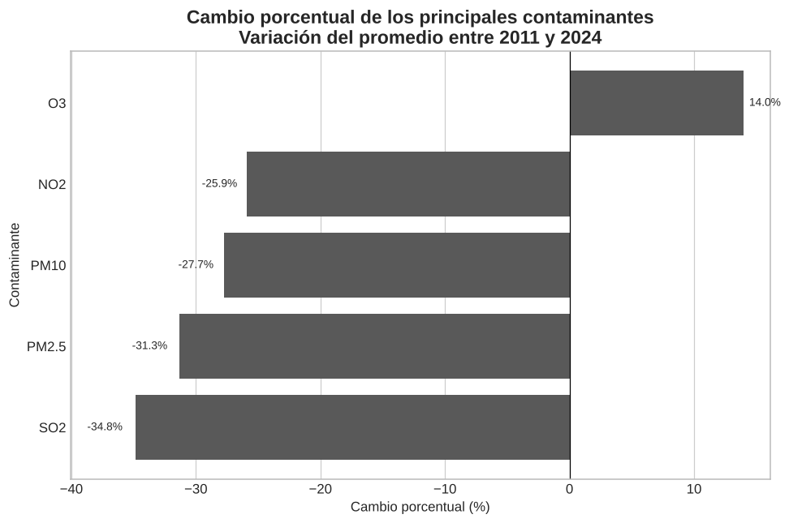
Interpretación
Cuatro de los cinco contaminantes bajaron entre 2011 y 2024, y el material particulado, el más relevante para la salud, se redujo cerca de 30 %. El ozono es la excepción.
El tamaño del cambio no indica qué tan confiable es: el SO₂ tiene la mayor caída pero la serie más irregular, y el PM10 una caída menor pero la tendencia más estable.
1.7 Análisis de variables meteorológicas#
Objetivo específico 1 · variables meteorológicas.
Temperatura del aire (TAire)#
taire = df[df["Variable"] == "TAire"].copy()
print("Registros de TAire:", len(taire))
estadistica_taire = estadisticos(taire["Promedio"])
tabla(estadistica_taire, ["Estadístico", "Valor"])
Registros de TAire: 73
| Estadístico | Valor |
|---|---|
| Mínimo | 13.400000 |
| Primer cuartil | 20.600000 |
| Mediana | 22.300000 |
| Media | 22.620000 |
| Tercer cuartil | 25.000000 |
| Máximo | 33.500000 |
taire_anual = promedio_anual(taire, "Promedio_TAire")
tabla(taire_anual, ["Año", "Promedio TAire", "Número de registros"])
| Año | Promedio TAire | Número de registros |
|---|---|---|
| 2011 | 20.900000 | 2 |
| 2012 | 21.970000 | 6 |
| 2013 | 22.080000 | 8 |
| 2017 | 22.310000 | 34 |
| 2018 | 23.120000 | 17 |
| 2019 | 24.880000 | 6 |
Interpretación
TAire solo tiene datos en 6 años (2011–2013 y 2017–2019) y 73 registros; algunos años tienen apenas 2.
grafico_anual(taire_anual, "Promedio_TAire", "Evolución del promedio anual de temperatura del aire", "Años con registros disponibles", "Promedio de temperatura del aire (°C)")
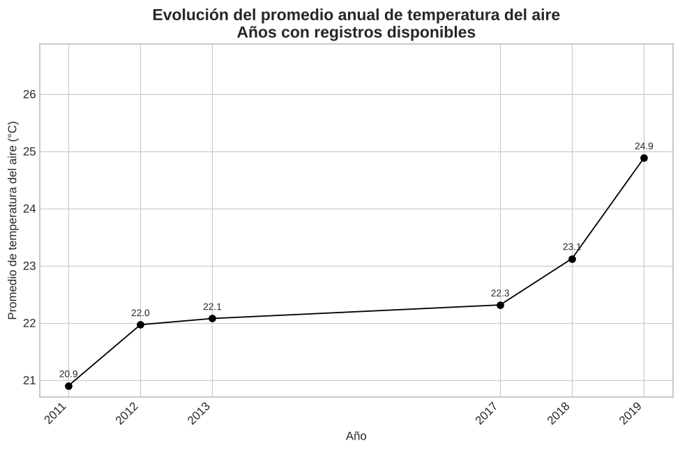
Interpretación
La subida de 20,9 °C a 24,9 °C no es un cambio climático plausible en 8 años: refleja que cambiaron las estaciones que reportan (una estación en tierra caliente sube el promedio). TAire2 y TAire10, con 834 y 334 registros, son mejores variables para estudiar la temperatura.
Humedad relativa del aire (HAire)#
haire = df[df["Variable"] == "HAire"].copy()
print("Registros de HAire:", len(haire))
estadistica_haire = estadisticos(haire["Promedio"])
tabla(estadistica_haire, ["Estadístico", "Valor"])
Registros de HAire: 75
| Estadístico | Valor |
|---|---|
| Mínimo | 33.100000 |
| Primer cuartil | 62.050000 |
| Mediana | 71.800000 |
| Media | 66.090000 |
| Tercer cuartil | 76.350000 |
| Máximo | 92.000000 |
haire_anual = promedio_anual(haire, "Promedio_HAire")
tabla(haire_anual, ["Año", "Promedio HAire", "Número de registros"])
| Año | Promedio HAire | Número de registros |
|---|---|---|
| 2011 | 71.900000 | 4 |
| 2012 | 70.700000 | 2 |
| 2013 | 72.550000 | 2 |
| 2014 | 68.340000 | 5 |
| 2017 | 65.510000 | 36 |
| 2018 | 62.390000 | 20 |
| 2019 | 72.530000 | 6 |
grafico_anual(haire_anual, "Promedio_HAire", "Evolución del promedio anual de humedad del aire", "Años con registros disponibles", "Promedio de humedad del aire")
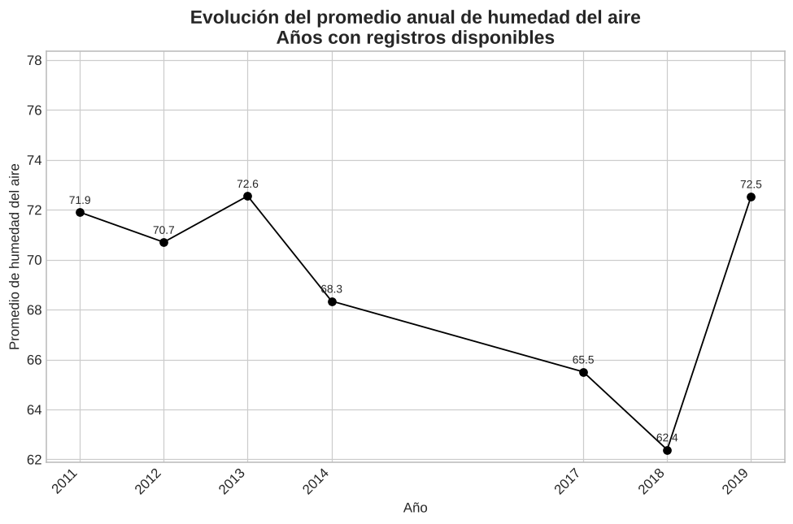
Interpretación
La humedad relativa oscila entre 62 % y 73 % sin una tendencia clara. Con solo 7 años y 75 registros, y 27 % de representatividad media, sus promedios anuales son poco confiables.
Velocidad del viento (VViento)#
vviento = df[df["Variable"] == "VViento"].copy()
print("Registros de VViento:", len(vviento))
estadistica_vviento = estadisticos(vviento["Promedio"])
tabla(estadistica_vviento, ["Estadístico", "Valor"])
Registros de VViento: 1254
| Estadístico | Valor |
|---|---|
| Mínimo | 0.100000 |
| Primer cuartil | 0.900000 |
| Mediana | 1.200000 |
| Media | 1.370000 |
| Tercer cuartil | 1.700000 |
| Máximo | 10.200000 |
vviento_anual = promedio_anual(vviento, "Promedio_VViento")
tabla(vviento_anual, ["Año", "Promedio VViento", "Número de registros"])
| Año | Promedio VViento | Número de registros |
|---|---|---|
| 2011 | 1.410000 | 52 |
| 2012 | 1.560000 | 61 |
| 2013 | 1.690000 | 89 |
| 2014 | 1.600000 | 89 |
| 2015 | 1.450000 | 91 |
| 2016 | 1.230000 | 100 |
| 2017 | 1.260000 | 115 |
| 2018 | 1.470000 | 89 |
| 2019 | 1.390000 | 74 |
| 2020 | 1.310000 | 136 |
| 2021 | 1.230000 | 174 |
| 2022 | 1.260000 | 184 |
grafico_anual(vviento_anual, "Promedio_VViento", "Evolución del promedio anual de velocidad del viento", "Años con registros disponibles", "Velocidad del viento (m/s)")
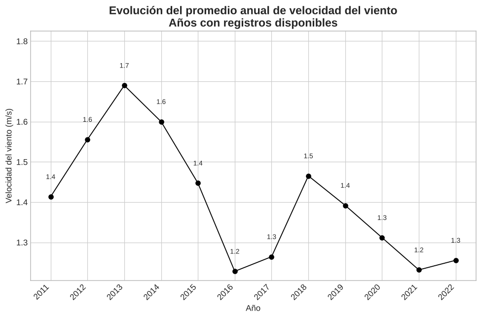
Interpretación
La velocidad del viento es baja en todo el periodo (1,2–1,7 m/s), en el rango de vientos débiles, y desde 2013 baja levemente. Con poco viento los contaminantes se dispersan menos, sobre todo en valles cerrados como el Aburrá, donde está buena parte de las estaciones.
Presión atmosférica (P)#
presion = df[df["Variable"] == "P"].copy()
print("Registros de P:", len(presion))
estadistica_presion = estadisticos(presion["Promedio"])
tabla(estadistica_presion, ["Estadístico", "Valor"])
Registros de P: 673
| Estadístico | Valor |
|---|---|
| Mínimo | 399.100000 |
| Primer cuartil | 629.900000 |
| Mediana | 677.600000 |
| Media | 701.680000 |
| Tercer cuartil | 755.500000 |
| Máximo | 1010.400000 |
presion_anual = promedio_anual(presion, "Promedio_P")
tabla(presion_anual, ["Año", "Promedio de presión", "Número de registros"])
| Año | Promedio de presión | Número de registros |
|---|---|---|
| 2011 | 634.880000 | 23 |
| 2012 | 636.120000 | 31 |
| 2013 | 631.590000 | 30 |
| 2014 | 639.330000 | 32 |
| 2015 | 651.300000 | 41 |
| 2016 | 726.740000 | 40 |
| 2017 | 753.810000 | 54 |
| 2018 | 851.040000 | 50 |
| 2019 | 843.070000 | 31 |
| 2020 | 719.270000 | 95 |
| 2021 | 664.450000 | 120 |
| 2022 | 676.770000 | 126 |
Interpretación
La presión salta de unos 635 mmHg (2011–2014) a 851 mmHg en 2018. La presión a nivel del mar es 760 mmHg y en Bogotá cerca de 560 mmHg, así que un promedio superior a 800 mmHg es físicamente imposible. La celda siguiente revela la causa.
grafico_anual(presion_anual, "Promedio_P", "Evolución del promedio anual de presión atmosférica", "Años con registros disponibles", "Presión atmosférica (hPa)")
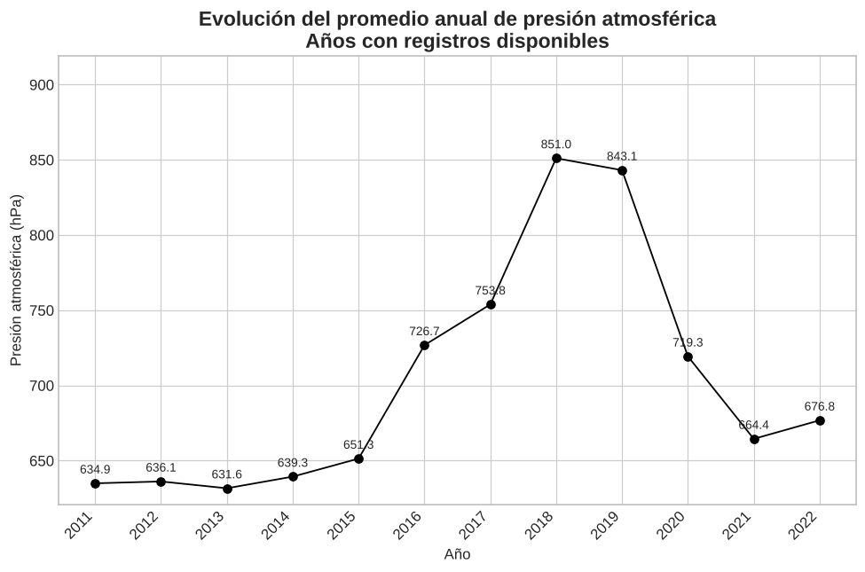
sospechosos = presion[presion["Promedio"] > 800]
print("Registros de presión > 800 mmHg:", len(sospechosos), "de", len(presion))
sospechosos["Nombre del Municipio"].value_counts().head(6)
Registros de presión > 800 mmHg: 108 de 673
Nombre del Municipio
CALI 22
VILLAVICENCIO 18
BARRANQUILLA 18
SANTA MARTA 8
MEDELLÍN 8
GIRARDOTA 6
Name: count, dtype: int64
Precaución
Hay registros de más de 800 mmHg en Cali y Medellín, ciudades a 1.000–1.500 m de altitud, donde la presión real ronda 640–680 mmHg. Los valores cercanos a 1.010 corresponden a hectopascales (hPa) etiquetados como mmHg. Es un error de unidades: esta variable no se puede interpretar ni correlacionar sin corregirlo.
Precipitación líquida (PLiquida)#
pliquida = df[df["Variable"] == "PLiquida"].copy()
print("Registros de PLiquida:", len(pliquida))
estadistica_pliquida = estadisticos(pliquida["Promedio"])
tabla(estadistica_pliquida, ["Estadístico", "Valor"])
Registros de PLiquida: 927
| Estadístico | Valor |
|---|---|
| Mínimo | 0.100000 |
| Primer cuartil | 0.200000 |
| Mediana | 1.400000 |
| Media | 9.770000 |
| Tercer cuartil | 3.400000 |
| Máximo | 3236.700000 |
pliquida_anual = promedio_anual(pliquida, "Promedio_PLiquida")
tabla(pliquida_anual, ["Año", "Promedio de precipitación", "Número de registros"])
| Año | Promedio de precipitación | Número de registros |
|---|---|---|
| 2011 | 3.290000 | 58 |
| 2012 | 1.950000 | 66 |
| 2013 | 2.580000 | 77 |
| 2014 | 3.060000 | 61 |
| 2015 | 2.130000 | 70 |
| 2016 | 4.560000 | 84 |
| 2017 | 56.530000 | 63 |
| 2018 | 2.970000 | 60 |
| 2019 | 34.790000 | 45 |
| 2020 | 16.460000 | 89 |
| 2021 | 6.540000 | 123 |
| 2022 | 1.880000 | 131 |
grafico_anual(pliquida_anual, "Promedio_PLiquida", "Evolución del promedio anual de precipitación líquida", "Años con registros disponibles", "Precipitación líquida (mm)")
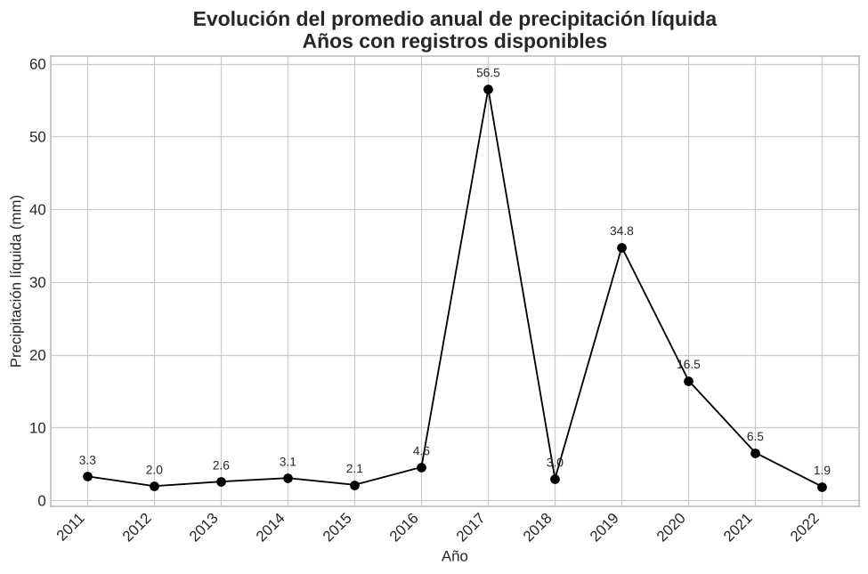
Interpretación
La precipitación promedio está entre 2 y 7 mm en casi todos los años, pero 2017 (56,5 mm) y 2019 (34,8 mm) se disparan por unos pocos valores extremos. Probablemente son acumulados reportados como promedios. Para esta variable, la mediana es más representativa que la media.
Radiación global (RGlobal)#
rglobal = df[df["Variable"] == "RGlobal"].copy()
print("Registros de RGlobal:", len(rglobal))
estadistica_rglobal = estadisticos(rglobal["Promedio"])
tabla(estadistica_rglobal, ["Estadístico", "Valor"])
Registros de RGlobal: 600
| Estadístico | Valor |
|---|---|
| Mínimo | 48.300000 |
| Primer cuartil | 156.880000 |
| Mediana | 178.450000 |
| Media | 185.640000 |
| Tercer cuartil | 206.400000 |
| Máximo | 431.300000 |
rglobal_anual = promedio_anual(rglobal, "Promedio_RGlobal")
tabla(rglobal_anual, ["Año", "Promedio RGlobal", "Número de registros"])
| Año | Promedio RGlobal | Número de registros |
|---|---|---|
| 2011 | 165.150000 | 19 |
| 2012 | 177.640000 | 41 |
| 2013 | 178.480000 | 43 |
| 2014 | 177.210000 | 42 |
| 2015 | 195.780000 | 38 |
| 2016 | 194.610000 | 34 |
| 2017 | 192.430000 | 71 |
| 2018 | 185.830000 | 61 |
| 2019 | 190.720000 | 43 |
| 2020 | 199.210000 | 53 |
| 2021 | 183.370000 | 74 |
| 2022 | 178.580000 | 81 |
grafico_anual(rglobal_anual, "Promedio_RGlobal", "Evolución del promedio anual de radiación global", "Años con registros disponibles", "Radiación global (W/m²)")
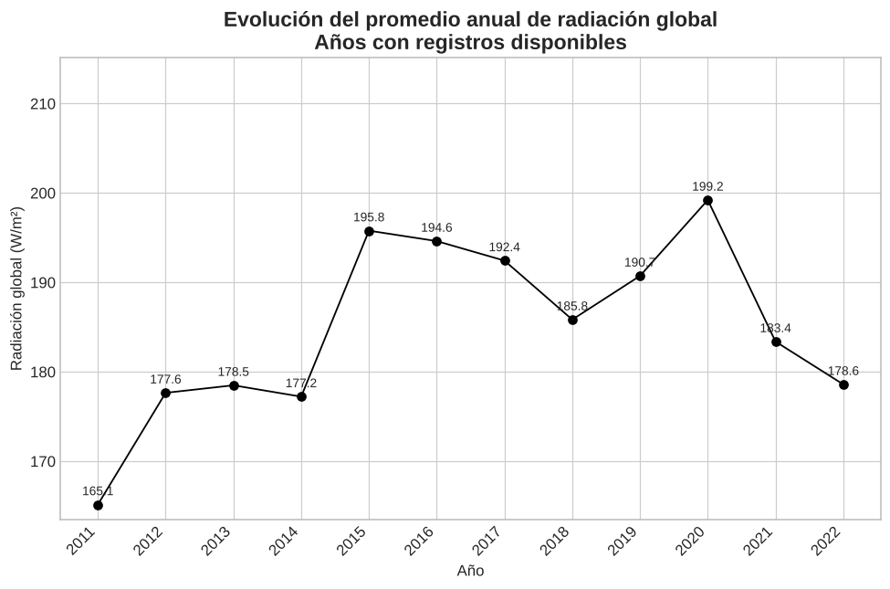
Interpretación
La radiación global es estable, entre 165 y 199 W/m², con un leve aumento hasta 2020. Es coherente con la ubicación ecuatorial del país, donde la radiación varía poco a lo largo del año.
Radiación ultravioleta B (RUVb)#
ruvb = df[df["Variable"] == "RUVb"].copy()
print("Registros de RUVb:", len(ruvb))
estadistica_ruvb = estadisticos(ruvb["Promedio"])
tabla(estadistica_ruvb, ["Estadístico", "Valor"])
Registros de RUVb: 66
| Estadístico | Valor |
|---|---|
| Mínimo | 0.600000 |
| Primer cuartil | 1.900000 |
| Mediana | 46.100000 |
| Media | 112.400000 |
| Tercer cuartil | 205.850000 |
| Máximo | 303.800000 |
ruvb_anual = promedio_anual(ruvb, "Promedio_RUVb")
tabla(ruvb_anual, ["Año", "Promedio RUVb", "Número de registros"])
| Año | Promedio RUVb | Número de registros |
|---|---|---|
| 2011 | 0.600000 | 2 |
| 2012 | 0.600000 | 2 |
| 2013 | 0.600000 | 2 |
| 2014 | 0.600000 | 2 |
| 2017 | 1.700000 | 4 |
| 2018 | 1.750000 | 4 |
| 2019 | 153.120000 | 12 |
| 2020 | 135.390000 | 14 |
| 2021 | 132.160000 | 14 |
| 2022 | 181.630000 | 10 |
grafico_anual(ruvb_anual, "Promedio_RUVb", "Evolución del promedio anual de radiación UV-B", "Años con registros disponibles", "Radiación UV-B")
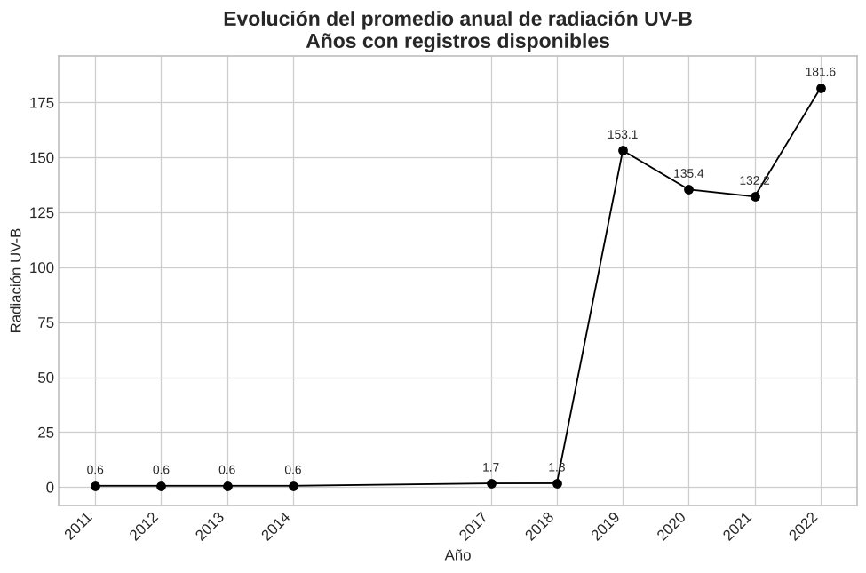
Interpretación
La radiación UV-B pasa de 0,6 (2011–2014) a valores entre 130 y 180 desde 2019. Un cambio así no es atmosférico; la celda siguiente muestra la causa.
ruvb.groupby("Año")["Autoridad Ambiental"].unique()
Año
2011 [SDA]
2012 [SDA]
2013 [SDA]
2014 [SDA]
2017 [CDMB]
2018 [CDMB]
2019 [CDMB, CORPOBOYACA, EPA BARRANQUILLA]
2020 [CDMB, CORPOBOYACA, CRC]
2021 [CDMB, CORPOBOYACA, CRC]
2022 [CORPOBOYACA, CRC]
Name: Autoridad Ambiental, dtype: object
Precaución
Hasta 2014 la RUVb solo la reportaba la SDA (Bogotá); desde 2017 la reportan otras autoridades (CDMB, Corpoboyacá, CRC) con otra escala. La serie no es comparable entre los dos periodos, y cualquier correlación con RUVb será un artefacto de este cambio.
1.8 Análisis de correlaciones#
Objetivo específico 1 · asociaciones entre variables.
Preparación de los datos#
datos_correlacion = df.groupby(["Año", "Variable"], as_index=False)["Promedio"].mean().pivot(index="Año", columns="Variable", values="Promedio").reset_index().rename_axis(None, axis=1)
datos_correlacion.head()
| Año | CO | DViento | HAire | HAire10 | HAire2 | NO | NO2 | O3 | P | ... | PM10 | PM2.5 | PST | RGlobal | RUVb | SO2 | TAire | TAire10 | TAire2 | VViento | |
|---|---|---|---|---|---|---|---|---|---|---|---|---|---|---|---|---|---|---|---|---|---|
| 0 | 2011 | 1159.331250 | 183.766667 | 71.90 | 74.066667 | 72.732000 | 33.830769 | 36.280000 | 23.937500 | 634.882609 | ... | 42.664336 | 21.463158 | 72.997500 | 165.147368 | 0.6 | 15.139535 | 20.900000 | 24.300000 | 18.330233 | 1.413462 |
| 1 | 2012 | 1154.315625 | 173.567442 | 70.70 | 68.366667 | 69.990741 | 29.894444 | 31.770833 | 27.548276 | 636.119355 | ... | 44.601852 | 23.884848 | 76.111429 | 177.641463 | 0.6 | 11.261538 | 21.966667 | 23.866667 | 20.075758 | 1.555738 |
| 2 | 2013 | 1186.396667 | 139.741538 | 72.55 | 69.218519 | 67.887500 | 29.331579 | 30.518605 | 27.855556 | 631.593333 | ... | 42.072671 | 22.162500 | 70.654286 | 178.483721 | 0.6 | 6.838462 | 22.075000 | 21.688462 | 20.833333 | 1.689888 |
| 3 | 2014 | 1219.070000 | 136.083077 | 68.34 | 68.829167 | 64.920588 | 32.156250 | 24.846939 | 29.013793 | 639.325000 | ... | 43.639634 | 21.481818 | 75.490909 | 177.214286 | 0.6 | 5.915152 | NaN | 21.539286 | 21.147727 | 1.600000 |
| 4 | 2015 | 1019.250000 | 144.307937 | NaN | 66.184615 | 59.509677 | 27.485000 | 24.356604 | 32.640909 | 651.304878 | ... | 44.396154 | 22.386441 | 80.233333 | 195.776316 | NaN | 7.258333 | NaN | 21.850000 | 20.958974 | 1.447253 |
5 rows × 21 columns
Interpretación
Para correlacionar variables que se miden en estaciones distintas, se calcula el promedio anual nacional de cada una. Cada variable queda reducida a máximo 14 puntos (uno por año), y algunas tienen menos (TAire 6, HAire 7). Con tan pocos puntos, un solo año atípico puede cambiar mucho el coeficiente.
Matriz de correlaciones#
variables_eda = ["PM10", "PM2.5", "NO2", "SO2", "O3", "TAire", "HAire", "VViento", "P", "PLiquida", "RGlobal", "RUVb"]
matriz_correlacion = datos_correlacion[[v for v in variables_eda if v in datos_correlacion.columns]].corr(method="pearson")
matriz_correlacion.round(2)
| PM10 | PM2.5 | NO2 | SO2 | O3 | TAire | HAire | VViento | P | PLiquida | RGlobal | RUVb | |
|---|---|---|---|---|---|---|---|---|---|---|---|---|
| PM10 | 1.00 | 0.97 | 0.44 | 0.23 | 0.59 | -0.79 | 0.39 | 0.58 | -0.44 | -0.31 | -0.17 | -0.83 |
| PM2.5 | 0.97 | 1.00 | 0.49 | 0.31 | 0.59 | -0.58 | 0.66 | 0.51 | -0.44 | -0.25 | -0.15 | -0.70 |
| NO2 | 0.44 | 0.49 | 1.00 | 0.52 | 0.05 | -0.73 | 0.57 | 0.35 | -0.55 | -0.53 | -0.71 | -0.39 |
| SO2 | 0.23 | 0.31 | 0.52 | 1.00 | -0.27 | -0.48 | 0.25 | -0.34 | 0.08 | 0.08 | -0.08 | -0.26 |
| O3 | 0.59 | 0.59 | 0.05 | -0.27 | 1.00 | -0.12 | 0.35 | 0.51 | -0.42 | -0.32 | 0.21 | -0.35 |
| TAire | -0.79 | -0.58 | -0.73 | -0.48 | -0.12 | 1.00 | -0.07 | -0.20 | 0.82 | 0.40 | 0.76 | 0.85 |
| HAire | 0.39 | 0.66 | 0.57 | 0.25 | 0.35 | -0.07 | 1.00 | 0.34 | -0.50 | -0.17 | -0.43 | 0.37 |
| VViento | 0.58 | 0.51 | 0.35 | -0.34 | 0.51 | -0.20 | 0.34 | 1.00 | -0.31 | -0.35 | -0.42 | -0.65 |
| P | -0.44 | -0.44 | -0.55 | 0.08 | -0.42 | 0.82 | -0.50 | -0.31 | 1.00 | 0.51 | 0.49 | 0.21 |
| PLiquida | -0.31 | -0.25 | -0.53 | 0.08 | -0.32 | 0.40 | -0.17 | -0.35 | 0.51 | 1.00 | 0.42 | 0.07 |
| RGlobal | -0.17 | -0.15 | -0.71 | -0.08 | 0.21 | 0.76 | -0.43 | -0.42 | 0.49 | 0.42 | 1.00 | 0.40 |
| RUVb | -0.83 | -0.70 | -0.39 | -0.26 | -0.35 | 0.85 | 0.37 | -0.65 | 0.21 | 0.07 | 0.40 | 1.00 |
distancia = 1 - matriz_correlacion
orden = leaves_list(linkage(squareform(distancia.values, checks=False), method="complete"))
m = matriz_correlacion.iloc[orden, orden]
mascara = np.tril(np.ones(m.shape, dtype=bool))
fig, ax = plt.subplots(figsize=(9, 7.5))
sns.heatmap(m, mask=mascara, annot=True, fmt=".2f", annot_kws={"size": 8}, cmap="RdBu_r", vmin=-1, vmax=1, square=True, linewidths=0.5, cbar_kws={"shrink": 0.7}, ax=ax)
ax.set_title("Matriz de correlación de Pearson", fontweight="bold")
plt.xticks(rotation=45, ha="left"); ax.xaxis.tick_top()
plt.tight_layout(); plt.show()
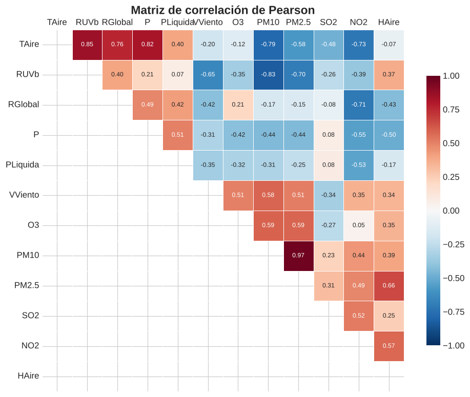
Interpretación
El agrupamiento jerárquico forma dos bloques. El primero reúne los contaminantes (PM10, PM2.5, O₃, SO₂, NO₂) con la velocidad del viento y la humedad, que se correlacionan positivamente entre sí. El segundo agrupa temperatura, radiación, presión y precipitación, que en general se relacionan negativamente con los contaminantes.
Relación robusta: PM10–PM2.5 (r = 0,97, 14 años). El PM2.5 es una fracción del PM10 y ambos comparten fuentes (tráfico, industria, polvo resuspendido). Es la única relación fuerte sustentada por la serie completa y sin problemas de datos.
Plausibles pero frágiles: TAire con PM10 (−0,79) y con NO₂ (−0,73). Más temperatura favorece la mezcla vertical y la dispersión, pero estos valores se basan en solo 6 años y en una variable con 24 % de representatividad.
Espurias: todas las de RUVb (con PM10 −0,83, con TAire 0,85) y las de P, por el cambio de escala y el error de unidades vistos en la sección 1.7.
Con interés físico: NO₂–RGlobal (−0,71, 12 años). La radiación solar descompone el NO₂ (fotólisis) y genera ozono, lo que es coherente con la relación negativa.
Una correlación alta no implica causalidad.
Tabla de correlaciones y fuerza de asociación#
def fuerza(r):
a = abs(r)
if a >= 0.80: return "Muy fuerte"
elif a >= 0.60: return "Fuerte"
elif a >= 0.40: return "Moderada"
elif a >= 0.20: return "Débil"
else: return "Muy débil"
correlaciones_todas = datos_correlacion.select_dtypes("number").dropna().corr(method="pearson").rename_axis("Variable1").reset_index().melt(id_vars="Variable1", var_name="Variable2", value_name="Correlacion")
correlaciones_todas = correlaciones_todas[correlaciones_todas["Variable1"] != correlaciones_todas["Variable2"]].copy()
correlaciones_todas["Relacion"] = correlaciones_todas["Variable1"] + " vs. " + correlaciones_todas["Variable2"]
correlaciones_todas["Fuerza"] = correlaciones_todas["Correlacion"].apply(fuerza)
correlaciones_todas = correlaciones_todas[["Relacion", "Correlacion", "Fuerza"]].drop_duplicates(subset="Relacion").reset_index(drop=True)
correlaciones_todas.head(10)
| Relacion | Correlacion | Fuerza | |
|---|---|---|---|
| 0 | CO vs. Año | -0.899201 | Muy fuerte |
| 1 | DViento vs. Año | 0.408605 | Moderada |
| 2 | HAire vs. Año | -0.499833 | Moderada |
| 3 | HAire10 vs. Año | -0.365553 | Débil |
| 4 | HAire2 vs. Año | -0.851093 | Muy fuerte |
| 5 | NO vs. Año | -0.798901 | Fuerte |
| 6 | NO2 vs. Año | -0.935289 | Muy fuerte |
| 7 | O3 vs. Año | -0.448068 | Moderada |
| 8 | P vs. Año | 0.960602 | Muy fuerte |
| 9 | PLiquida vs. Año | 0.598982 | Moderada |
Interpretación
Esta tabla usa .dropna() sobre las 20 variables a la vez, así que solo conserva los años con dato en todas: 2011, 2012, 2013, 2017, 2018 y 2019. Por eso sus valores difieren de la matriz anterior (por ejemplo PM10–PM2.5 da 0,93 aquí y 0,97 en la matriz). Con 6 puntos, una correlación de 0,8 puede aparecer por azar.
Las filas con Año miden tendencia: PM10 (−0,96), NO₂ (−0,94) y PM2.5 (−0,87) bajan con el tiempo, mientras que P (0,96) y RGlobal (0,90) suben. En el caso de P es otra vez el error de unidades.
def color_corr(x):
if x >= 0.80: return "#81C784"
elif x >= 0.60: return "#A5D6A7"
elif x >= 0.40: return "#FFF59D"
elif x >= 0.20: return "#FFE0B2"
elif x <= -0.80: return "#E57373"
elif x <= -0.60: return "#EF9A9A"
elif x <= -0.40: return "#FFCC80"
elif x <= -0.20: return "#FFE0B2"
else: return "#E0E0E0"
estilos = pd.DataFrame("", index=correlaciones_todas.index, columns=correlaciones_todas.columns)
estilos["Correlacion"] = ["background-color: " + color_corr(v) + "; color: black" for v in correlaciones_todas["Correlacion"]]
estilos["Fuerza"] = estilos["Correlacion"]
correlaciones_todas.round(2).rename(columns={"Relacion": "Relación", "Correlacion": "Coeficiente de correlación"}).style.apply(lambda _: estilos.rename(columns={"Relacion": "Relación", "Correlacion": "Coeficiente de correlación"}), axis=None).hide(axis="index").set_table_styles([{"selector": "th, td", "props": [("border", "1px solid #999999"), ("padding", "4px 10px"), ("text-align", "left")]}])
| Relación | Coeficiente de correlación | Fuerza |
|---|---|---|
| CO vs. Año | -0.900000 | Muy fuerte |
| DViento vs. Año | 0.410000 | Moderada |
| HAire vs. Año | -0.500000 | Moderada |
| HAire10 vs. Año | -0.370000 | Débil |
| HAire2 vs. Año | -0.850000 | Muy fuerte |
| NO vs. Año | -0.800000 | Fuerte |
| NO2 vs. Año | -0.940000 | Muy fuerte |
| O3 vs. Año | -0.450000 | Moderada |
| P vs. Año | 0.960000 | Muy fuerte |
| PLiquida vs. Año | 0.600000 | Moderada |
| PM10 vs. Año | -0.960000 | Muy fuerte |
| PM2.5 vs. Año | -0.870000 | Muy fuerte |
| PST vs. Año | -0.710000 | Fuerte |
| RGlobal vs. Año | 0.900000 | Muy fuerte |
| RUVb vs. Año | 0.580000 | Moderada |
| SO2 vs. Año | -0.480000 | Moderada |
| TAire vs. Año | 0.860000 | Muy fuerte |
| TAire10 vs. Año | -0.460000 | Moderada |
| TAire2 vs. Año | 0.890000 | Muy fuerte |
| VViento vs. Año | -0.490000 | Moderada |
| Año vs. CO | -0.900000 | Muy fuerte |
| DViento vs. CO | -0.480000 | Moderada |
| HAire vs. CO | 0.780000 | Fuerte |
| HAire10 vs. CO | 0.100000 | Muy débil |
| HAire2 vs. CO | 0.540000 | Moderada |
| NO vs. CO | 0.640000 | Fuerte |
| NO2 vs. CO | 0.900000 | Muy fuerte |
| O3 vs. CO | 0.660000 | Fuerte |
| P vs. CO | -0.900000 | Muy fuerte |
| PLiquida vs. CO | -0.620000 | Fuerte |
| PM10 vs. CO | 0.890000 | Muy fuerte |
| PM2.5 vs. CO | 0.930000 | Muy fuerte |
| PST vs. CO | 0.400000 | Débil |
| RGlobal vs. CO | -0.810000 | Muy fuerte |
| RUVb vs. CO | -0.250000 | Débil |
| SO2 vs. CO | 0.280000 | Débil |
| TAire vs. CO | -0.580000 | Moderada |
| TAire10 vs. CO | 0.530000 | Moderada |
| TAire2 vs. CO | -0.640000 | Fuerte |
| VViento vs. CO | 0.680000 | Fuerte |
| Año vs. DViento | 0.410000 | Moderada |
| CO vs. DViento | -0.480000 | Moderada |
| HAire vs. DViento | -0.250000 | Débil |
| HAire10 vs. DViento | 0.140000 | Muy débil |
| HAire2 vs. DViento | -0.300000 | Débil |
| NO vs. DViento | -0.190000 | Muy débil |
| NO2 vs. DViento | -0.220000 | Débil |
| O3 vs. DViento | -0.720000 | Fuerte |
| P vs. DViento | 0.580000 | Moderada |
| PLiquida vs. DViento | 0.230000 | Débil |
| PM10 vs. DViento | -0.450000 | Moderada |
| PM2.5 vs. DViento | -0.480000 | Moderada |
| PST vs. DViento | -0.450000 | Moderada |
| RGlobal vs. DViento | 0.140000 | Muy débil |
| RUVb vs. DViento | 0.460000 | Moderada |
| SO2 vs. DViento | 0.530000 | Moderada |
| TAire vs. DViento | 0.380000 | Débil |
| TAire10 vs. DViento | 0.470000 | Moderada |
| TAire2 vs. DViento | 0.300000 | Débil |
| VViento vs. DViento | -0.690000 | Fuerte |
| Año vs. HAire | -0.500000 | Moderada |
| CO vs. HAire | 0.780000 | Fuerte |
| DViento vs. HAire | -0.250000 | Débil |
| HAire10 vs. HAire | -0.310000 | Débil |
| HAire2 vs. HAire | 0.050000 | Muy débil |
| NO vs. HAire | 0.120000 | Muy débil |
| NO2 vs. HAire | 0.570000 | Moderada |
| O3 vs. HAire | 0.530000 | Moderada |
| P vs. HAire | -0.560000 | Moderada |
| PLiquida vs. HAire | -0.200000 | Muy débil |
| PM10 vs. HAire | 0.460000 | Moderada |
| PM2.5 vs. HAire | 0.690000 | Fuerte |
| PST vs. HAire | -0.230000 | Débil |
| RGlobal vs. HAire | -0.460000 | Moderada |
| RUVb vs. HAire | 0.370000 | Débil |
| SO2 vs. HAire | 0.240000 | Débil |
| TAire vs. HAire | -0.070000 | Muy débil |
| TAire10 vs. HAire | 0.540000 | Moderada |
| TAire2 vs. HAire | -0.260000 | Débil |
| VViento vs. HAire | 0.400000 | Débil |
| Año vs. HAire10 | -0.370000 | Débil |
| CO vs. HAire10 | 0.100000 | Muy débil |
| DViento vs. HAire10 | 0.140000 | Muy débil |
| HAire vs. HAire10 | -0.310000 | Débil |
| HAire2 vs. HAire10 | 0.540000 | Moderada |
| NO vs. HAire10 | 0.780000 | Fuerte |
| NO2 vs. HAire10 | 0.490000 | Moderada |
| O3 vs. HAire10 | -0.470000 | Moderada |
| P vs. HAire10 | -0.160000 | Muy débil |
| PLiquida vs. HAire10 | -0.540000 | Moderada |
| PM10 vs. HAire10 | 0.220000 | Débil |
| PM2.5 vs. HAire10 | -0.110000 | Muy débil |
| PST vs. HAire10 | 0.550000 | Moderada |
| RGlobal vs. HAire10 | -0.640000 | Fuerte |
| RUVb vs. HAire10 | -0.570000 | Moderada |
| SO2 vs. HAire10 | 0.400000 | Moderada |
| TAire vs. HAire10 | -0.580000 | Moderada |
| TAire10 vs. HAire10 | 0.210000 | Débil |
| TAire2 vs. HAire10 | -0.420000 | Moderada |
| VViento vs. HAire10 | 0.020000 | Muy débil |
| Año vs. HAire2 | -0.850000 | Muy fuerte |
| CO vs. HAire2 | 0.540000 | Moderada |
| DViento vs. HAire2 | -0.300000 | Débil |
| HAire vs. HAire2 | 0.050000 | Muy débil |
| HAire10 vs. HAire2 | 0.540000 | Moderada |
| NO vs. HAire2 | 0.720000 | Fuerte |
| NO2 vs. HAire2 | 0.700000 | Fuerte |
| O3 vs. HAire2 | 0.100000 | Muy débil |
| P vs. HAire2 | -0.810000 | Muy fuerte |
| PLiquida vs. HAire2 | -0.340000 | Débil |
| PM10 vs. HAire2 | 0.790000 | Fuerte |
| PM2.5 vs. HAire2 | 0.590000 | Moderada |
| PST vs. HAire2 | 0.890000 | Muy fuerte |
| RGlobal vs. HAire2 | -0.730000 | Fuerte |
| RUVb vs. HAire2 | -0.840000 | Muy fuerte |
| SO2 vs. HAire2 | 0.540000 | Moderada |
| TAire vs. HAire2 | -0.990000 | Muy fuerte |
| TAire10 vs. HAire2 | 0.160000 | Muy débil |
| TAire2 vs. HAire2 | -0.970000 | Muy fuerte |
| VViento vs. HAire2 | 0.120000 | Muy débil |
| Año vs. NO | -0.800000 | Fuerte |
| CO vs. NO | 0.640000 | Fuerte |
| DViento vs. NO | -0.190000 | Muy débil |
| HAire vs. NO | 0.120000 | Muy débil |
| HAire10 vs. NO | 0.780000 | Fuerte |
| HAire2 vs. NO | 0.720000 | Fuerte |
| NO2 vs. NO | 0.870000 | Muy fuerte |
| O3 vs. NO | 0.140000 | Muy débil |
| P vs. NO | -0.630000 | Fuerte |
| PLiquida vs. NO | -0.870000 | Muy fuerte |
| PM10 vs. NO | 0.740000 | Fuerte |
| PM2.5 vs. NO | 0.490000 | Moderada |
| PST vs. NO | 0.730000 | Fuerte |
| RGlobal vs. NO | -0.910000 | Muy fuerte |
| RUVb vs. NO | -0.650000 | Fuerte |
| SO2 vs. NO | 0.380000 | Débil |
| TAire vs. NO | -0.760000 | Fuerte |
| TAire10 vs. NO | 0.470000 | Moderada |
| TAire2 vs. NO | -0.640000 | Fuerte |
| VViento vs. NO | 0.510000 | Moderada |
| Año vs. NO2 | -0.940000 | Muy fuerte |
| CO vs. NO2 | 0.900000 | Muy fuerte |
| DViento vs. NO2 | -0.220000 | Débil |
| HAire vs. NO2 | 0.570000 | Moderada |
| HAire10 vs. NO2 | 0.490000 | Moderada |
| HAire2 vs. NO2 | 0.700000 | Fuerte |
| NO vs. NO2 | 0.870000 | Muy fuerte |
| O3 vs. NO2 | 0.330000 | Débil |
| P vs. NO2 | -0.830000 | Muy fuerte |
| PLiquida vs. NO2 | -0.740000 | Fuerte |
| PM10 vs. NO2 | 0.870000 | Muy fuerte |
| PM2.5 vs. NO2 | 0.770000 | Fuerte |
| PST vs. NO2 | 0.530000 | Moderada |
| RGlobal vs. NO2 | -0.980000 | Muy fuerte |
| RUVb vs. NO2 | -0.390000 | Débil |
| SO2 vs. NO2 | 0.540000 | Moderada |
| TAire vs. NO2 | -0.730000 | Fuerte |
| TAire10 vs. NO2 | 0.670000 | Fuerte |
| TAire2 vs. NO2 | -0.740000 | Fuerte |
| VViento vs. NO2 | 0.510000 | Moderada |
| Año vs. O3 | -0.450000 | Moderada |
| CO vs. O3 | 0.660000 | Fuerte |
| DViento vs. O3 | -0.720000 | Fuerte |
| HAire vs. O3 | 0.530000 | Moderada |
| HAire10 vs. O3 | -0.470000 | Moderada |
| HAire2 vs. O3 | 0.100000 | Muy débil |
| NO vs. O3 | 0.140000 | Muy débil |
| NO2 vs. O3 | 0.330000 | Débil |
| P vs. O3 | -0.580000 | Moderada |
| PLiquida vs. O3 | -0.380000 | Débil |
| PM10 vs. O3 | 0.610000 | Fuerte |
| PM2.5 vs. O3 | 0.750000 | Fuerte |
| PST vs. O3 | 0.220000 | Débil |
| RGlobal vs. O3 | -0.160000 | Muy débil |
| RUVb vs. O3 | -0.120000 | Muy débil |
| SO2 vs. O3 | -0.410000 | Moderada |
| TAire vs. O3 | -0.120000 | Muy débil |
| TAire10 vs. O3 | 0.040000 | Muy débil |
| TAire2 vs. O3 | -0.140000 | Muy débil |
| VViento vs. O3 | 0.820000 | Muy fuerte |
| Año vs. P | 0.960000 | Muy fuerte |
| CO vs. P | -0.900000 | Muy fuerte |
| DViento vs. P | 0.580000 | Moderada |
| HAire vs. P | -0.560000 | Moderada |
| HAire10 vs. P | -0.160000 | Muy débil |
| HAire2 vs. P | -0.810000 | Muy fuerte |
| NO vs. P | -0.630000 | Fuerte |
| NO2 vs. P | -0.830000 | Muy fuerte |
| O3 vs. P | -0.580000 | Moderada |
| PLiquida vs. P | 0.440000 | Moderada |
| PM10 vs. P | -0.940000 | Muy fuerte |
| PM2.5 vs. P | -0.920000 | Muy fuerte |
| PST vs. P | -0.670000 | Fuerte |
| RGlobal vs. P | 0.760000 | Fuerte |
| RUVb vs. P | 0.560000 | Moderada |
| SO2 vs. P | -0.340000 | Débil |
| TAire vs. P | 0.820000 | Muy fuerte |
| TAire10 vs. P | -0.280000 | Débil |
| TAire2 vs. P | 0.870000 | Muy fuerte |
| VViento vs. P | -0.500000 | Moderada |
| Año vs. PLiquida | 0.600000 | Moderada |
| CO vs. PLiquida | -0.620000 | Fuerte |
| DViento vs. PLiquida | 0.230000 | Débil |
| HAire vs. PLiquida | -0.200000 | Muy débil |
| HAire10 vs. PLiquida | -0.540000 | Moderada |
| HAire2 vs. PLiquida | -0.340000 | Débil |
| NO vs. PLiquida | -0.870000 | Muy fuerte |
| NO2 vs. PLiquida | -0.740000 | Fuerte |
| O3 vs. PLiquida | -0.380000 | Débil |
| P vs. PLiquida | 0.440000 | Moderada |
| PM10 vs. PLiquida | -0.620000 | Fuerte |
| PM2.5 vs. PLiquida | -0.450000 | Moderada |
| PST vs. PLiquida | -0.480000 | Moderada |
| RGlobal vs. PLiquida | 0.730000 | Fuerte |
| RUVb vs. PLiquida | 0.380000 | Débil |
| SO2 vs. PLiquida | -0.030000 | Muy débil |
| TAire vs. PLiquida | 0.400000 | Débil |
| TAire10 vs. PLiquida | -0.500000 | Moderada |
| TAire2 vs. PLiquida | 0.250000 | Débil |
| VViento vs. PLiquida | -0.770000 | Fuerte |
| Año vs. PM10 | -0.960000 | Muy fuerte |
| CO vs. PM10 | 0.890000 | Muy fuerte |
| DViento vs. PM10 | -0.450000 | Moderada |
| HAire vs. PM10 | 0.460000 | Moderada |
| HAire10 vs. PM10 | 0.220000 | Débil |
| HAire2 vs. PM10 | 0.790000 | Fuerte |
| NO vs. PM10 | 0.740000 | Fuerte |
| NO2 vs. PM10 | 0.870000 | Muy fuerte |
| O3 vs. PM10 | 0.610000 | Fuerte |
| P vs. PM10 | -0.940000 | Muy fuerte |
| PLiquida vs. PM10 | -0.620000 | Fuerte |
| PM2.5 vs. PM10 | 0.930000 | Muy fuerte |
| PST vs. PM10 | 0.720000 | Fuerte |
| RGlobal vs. PM10 | -0.790000 | Fuerte |
| RUVb vs. PM10 | -0.580000 | Moderada |
| SO2 vs. PM10 | 0.350000 | Débil |
| TAire vs. PM10 | -0.790000 | Fuerte |
| TAire10 vs. PM10 | 0.430000 | Moderada |
| TAire2 vs. PM10 | -0.800000 | Muy fuerte |
| VViento vs. PM10 | 0.580000 | Moderada |
| Año vs. PM2.5 | -0.870000 | Muy fuerte |
| CO vs. PM2.5 | 0.930000 | Muy fuerte |
| DViento vs. PM2.5 | -0.480000 | Moderada |
| HAire vs. PM2.5 | 0.690000 | Fuerte |
| HAire10 vs. PM2.5 | -0.110000 | Muy débil |
| HAire2 vs. PM2.5 | 0.590000 | Moderada |
| NO vs. PM2.5 | 0.490000 | Moderada |
| NO2 vs. PM2.5 | 0.770000 | Fuerte |
| O3 vs. PM2.5 | 0.750000 | Fuerte |
| P vs. PM2.5 | -0.920000 | Muy fuerte |
| PLiquida vs. PM2.5 | -0.450000 | Moderada |
| PM10 vs. PM2.5 | 0.930000 | Muy fuerte |
| PST vs. PM2.5 | 0.460000 | Moderada |
| RGlobal vs. PM2.5 | -0.640000 | Fuerte |
| RUVb vs. PM2.5 | -0.310000 | Débil |
| SO2 vs. PM2.5 | 0.280000 | Débil |
| TAire vs. PM2.5 | -0.580000 | Moderada |
| TAire10 vs. PM2.5 | 0.440000 | Moderada |
| TAire2 vs. PM2.5 | -0.680000 | Fuerte |
| VViento vs. PM2.5 | 0.570000 | Moderada |
| Año vs. PST | -0.710000 | Fuerte |
| CO vs. PST | 0.400000 | Débil |
| DViento vs. PST | -0.450000 | Moderada |
| HAire vs. PST | -0.230000 | Débil |
| HAire10 vs. PST | 0.550000 | Moderada |
| HAire2 vs. PST | 0.890000 | Muy fuerte |
| NO vs. PST | 0.730000 | Fuerte |
| NO2 vs. PST | 0.530000 | Moderada |
| O3 vs. PST | 0.220000 | Débil |
| P vs. PST | -0.670000 | Fuerte |
| PLiquida vs. PST | -0.480000 | Moderada |
| PM10 vs. PST | 0.720000 | Fuerte |
| PM2.5 vs. PST | 0.460000 | Moderada |
| RGlobal vs. PST | -0.560000 | Moderada |
| RUVb vs. PST | -0.980000 | Muy fuerte |
| SO2 vs. PST | 0.170000 | Muy débil |
| TAire vs. PST | -0.900000 | Muy fuerte |
| TAire10 vs. PST | -0.080000 | Muy débil |
| TAire2 vs. PST | -0.770000 | Fuerte |
| VViento vs. PST | 0.330000 | Débil |
| Año vs. RGlobal | 0.900000 | Muy fuerte |
| CO vs. RGlobal | -0.810000 | Muy fuerte |
| DViento vs. RGlobal | 0.140000 | Muy débil |
| HAire vs. RGlobal | -0.460000 | Moderada |
| HAire10 vs. RGlobal | -0.640000 | Fuerte |
| HAire2 vs. RGlobal | -0.730000 | Fuerte |
| NO vs. RGlobal | -0.910000 | Muy fuerte |
| NO2 vs. RGlobal | -0.980000 | Muy fuerte |
| O3 vs. RGlobal | -0.160000 | Muy débil |
| P vs. RGlobal | 0.760000 | Fuerte |
| PLiquida vs. RGlobal | 0.730000 | Fuerte |
| PM10 vs. RGlobal | -0.790000 | Fuerte |
| PM2.5 vs. RGlobal | -0.640000 | Fuerte |
| PST vs. RGlobal | -0.560000 | Moderada |
| RUVb vs. RGlobal | 0.440000 | Moderada |
| SO2 vs. RGlobal | -0.590000 | Moderada |
| TAire vs. RGlobal | 0.760000 | Fuerte |
| TAire10 vs. RGlobal | -0.640000 | Fuerte |
| TAire2 vs. RGlobal | 0.750000 | Fuerte |
| VViento vs. RGlobal | -0.410000 | Moderada |
| Año vs. RUVb | 0.580000 | Moderada |
| CO vs. RUVb | -0.250000 | Débil |
| DViento vs. RUVb | 0.460000 | Moderada |
| HAire vs. RUVb | 0.370000 | Débil |
| HAire10 vs. RUVb | -0.570000 | Moderada |
| HAire2 vs. RUVb | -0.840000 | Muy fuerte |
| NO vs. RUVb | -0.650000 | Fuerte |
| NO2 vs. RUVb | -0.390000 | Débil |
| O3 vs. RUVb | -0.120000 | Muy débil |
| P vs. RUVb | 0.560000 | Moderada |
| PLiquida vs. RUVb | 0.380000 | Débil |
| PM10 vs. RUVb | -0.580000 | Moderada |
| PM2.5 vs. RUVb | -0.310000 | Débil |
| PST vs. RUVb | -0.980000 | Muy fuerte |
| RGlobal vs. RUVb | 0.440000 | Moderada |
| SO2 vs. RUVb | -0.090000 | Muy débil |
| TAire vs. RUVb | 0.850000 | Muy fuerte |
| TAire10 vs. RUVb | 0.240000 | Débil |
| TAire2 vs. RUVb | 0.700000 | Fuerte |
| VViento vs. RUVb | -0.240000 | Débil |
| Año vs. SO2 | -0.480000 | Moderada |
| CO vs. SO2 | 0.280000 | Débil |
| DViento vs. SO2 | 0.530000 | Moderada |
| HAire vs. SO2 | 0.240000 | Débil |
| HAire10 vs. SO2 | 0.400000 | Moderada |
| HAire2 vs. SO2 | 0.540000 | Moderada |
| NO vs. SO2 | 0.380000 | Débil |
| NO2 vs. SO2 | 0.540000 | Moderada |
| O3 vs. SO2 | -0.410000 | Moderada |
| P vs. SO2 | -0.340000 | Débil |
| PLiquida vs. SO2 | -0.030000 | Muy débil |
| PM10 vs. SO2 | 0.350000 | Débil |
| PM2.5 vs. SO2 | 0.280000 | Débil |
| PST vs. SO2 | 0.170000 | Muy débil |
| RGlobal vs. SO2 | -0.590000 | Moderada |
| RUVb vs. SO2 | -0.090000 | Muy débil |
| TAire vs. SO2 | -0.480000 | Moderada |
| TAire10 vs. SO2 | 0.680000 | Fuerte |
| TAire2 vs. SO2 | -0.620000 | Fuerte |
| VViento vs. SO2 | -0.440000 | Moderada |
| Año vs. TAire | 0.860000 | Muy fuerte |
| CO vs. TAire | -0.580000 | Moderada |
| DViento vs. TAire | 0.380000 | Débil |
| HAire vs. TAire | -0.070000 | Muy débil |
| HAire10 vs. TAire | -0.580000 | Moderada |
| HAire2 vs. TAire | -0.990000 | Muy fuerte |
| NO vs. TAire | -0.760000 | Fuerte |
| NO2 vs. TAire | -0.730000 | Fuerte |
| O3 vs. TAire | -0.120000 | Muy débil |
| P vs. TAire | 0.820000 | Muy fuerte |
| PLiquida vs. TAire | 0.400000 | Débil |
| PM10 vs. TAire | -0.790000 | Fuerte |
| PM2.5 vs. TAire | -0.580000 | Moderada |
| PST vs. TAire | -0.900000 | Muy fuerte |
| RGlobal vs. TAire | 0.760000 | Fuerte |
| RUVb vs. TAire | 0.850000 | Muy fuerte |
| SO2 vs. TAire | -0.480000 | Moderada |
| TAire10 vs. TAire | -0.120000 | Muy débil |
| TAire2 vs. TAire | 0.960000 | Muy fuerte |
| VViento vs. TAire | -0.200000 | Muy débil |
| Año vs. TAire10 | -0.460000 | Moderada |
| CO vs. TAire10 | 0.530000 | Moderada |
| DViento vs. TAire10 | 0.470000 | Moderada |
| HAire vs. TAire10 | 0.540000 | Moderada |
| HAire10 vs. TAire10 | 0.210000 | Débil |
| HAire2 vs. TAire10 | 0.160000 | Muy débil |
| NO vs. TAire10 | 0.470000 | Moderada |
| NO2 vs. TAire10 | 0.670000 | Fuerte |
| O3 vs. TAire10 | 0.040000 | Muy débil |
| P vs. TAire10 | -0.280000 | Débil |
| PLiquida vs. TAire10 | -0.500000 | Moderada |
| PM10 vs. TAire10 | 0.430000 | Moderada |
| PM2.5 vs. TAire10 | 0.440000 | Moderada |
| PST vs. TAire10 | -0.080000 | Muy débil |
| RGlobal vs. TAire10 | -0.640000 | Fuerte |
| RUVb vs. TAire10 | 0.240000 | Débil |
| SO2 vs. TAire10 | 0.680000 | Fuerte |
| TAire vs. TAire10 | -0.120000 | Muy débil |
| TAire2 vs. TAire10 | -0.230000 | Débil |
| VViento vs. TAire10 | 0.120000 | Muy débil |
| Año vs. TAire2 | 0.890000 | Muy fuerte |
| CO vs. TAire2 | -0.640000 | Fuerte |
| DViento vs. TAire2 | 0.300000 | Débil |
| HAire vs. TAire2 | -0.260000 | Débil |
| HAire10 vs. TAire2 | -0.420000 | Moderada |
| HAire2 vs. TAire2 | -0.970000 | Muy fuerte |
| NO vs. TAire2 | -0.640000 | Fuerte |
| NO2 vs. TAire2 | -0.740000 | Fuerte |
| O3 vs. TAire2 | -0.140000 | Muy débil |
| P vs. TAire2 | 0.870000 | Muy fuerte |
| PLiquida vs. TAire2 | 0.250000 | Débil |
| PM10 vs. TAire2 | -0.800000 | Muy fuerte |
| PM2.5 vs. TAire2 | -0.680000 | Fuerte |
| PST vs. TAire2 | -0.770000 | Fuerte |
| RGlobal vs. TAire2 | 0.750000 | Fuerte |
| RUVb vs. TAire2 | 0.700000 | Fuerte |
| SO2 vs. TAire2 | -0.620000 | Fuerte |
| TAire vs. TAire2 | 0.960000 | Muy fuerte |
| TAire10 vs. TAire2 | -0.230000 | Débil |
| VViento vs. TAire2 | -0.090000 | Muy débil |
| Año vs. VViento | -0.490000 | Moderada |
| CO vs. VViento | 0.680000 | Fuerte |
| DViento vs. VViento | -0.690000 | Fuerte |
| HAire vs. VViento | 0.400000 | Débil |
| HAire10 vs. VViento | 0.020000 | Muy débil |
| HAire2 vs. VViento | 0.120000 | Muy débil |
| NO vs. VViento | 0.510000 | Moderada |
| NO2 vs. VViento | 0.510000 | Moderada |
| O3 vs. VViento | 0.820000 | Muy fuerte |
| P vs. VViento | -0.500000 | Moderada |
| PLiquida vs. VViento | -0.770000 | Fuerte |
| PM10 vs. VViento | 0.580000 | Moderada |
| PM2.5 vs. VViento | 0.570000 | Moderada |
| PST vs. VViento | 0.330000 | Débil |
| RGlobal vs. VViento | -0.410000 | Moderada |
| RUVb vs. VViento | -0.240000 | Débil |
| SO2 vs. VViento | -0.440000 | Moderada |
| TAire vs. VViento | -0.200000 | Muy débil |
| TAire10 vs. VViento | 0.120000 | Muy débil |
| TAire2 vs. VViento | -0.090000 | Muy débil |
1.9 Análisis de valores atípicos#
Objetivo específico 1 · valores atípicos.
outliers_pm = pd.DataFrame({"Variable": ["PM10", "PM2.5"], "Q1": [pm10["Promedio"].quantile(0.25), pm25["Promedio"].quantile(0.25)], "Q3": [pm10["Promedio"].quantile(0.75), pm25["Promedio"].quantile(0.75)]})
outliers_pm["Rango_IQR"] = outliers_pm["Q3"] - outliers_pm["Q1"]
outliers_pm["Limite_inferior"] = outliers_pm["Q1"] - 1.5 * outliers_pm["Rango_IQR"]
outliers_pm["Limite_superior"] = outliers_pm["Q3"] + 1.5 * outliers_pm["Rango_IQR"]
tabla(outliers_pm, ["Variable", "Primer cuartil", "Tercer cuartil", "Rango IQR", "Límite inferior", "Límite superior"])
| Variable | Primer cuartil | Tercer cuartil | Rango IQR | Límite inferior | Límite superior |
|---|---|---|---|---|---|
| PM10 | 27.000000 | 44.800000 | 17.800000 | 0.300000 | 71.500000 |
| PM2.5 | 12.500000 | 19.800000 | 7.300000 | 1.550000 | 30.750000 |
Interpretación
Para PM10 son atípicos los valores por encima de 71,5 µg/m³, y para PM2.5 los que superan 30,75 µg/m³. Los límites inferiores son prácticamente cero, así que no hay atípicos bajos.
Valores atípicos de PM10#
fig, ax = plt.subplots(figsize=(6, 6))
ax.boxplot(pm10["Promedio"].dropna(), widths=0.4)
ax.set_title("Distribución y valores atípicos de PM10", fontweight="bold"); ax.set_ylabel("Concentración de PM10"); ax.set_xticks([])
plt.tight_layout(); plt.show()
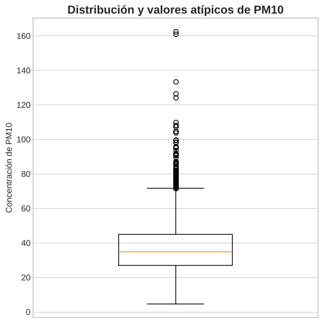
Interpretación
PM10 tiene 91 registros atípicos (3 %), todos por encima de la caja. Los más altos están en Bogotá (estación Bolivia, 162 µg/m³ en 2012) y en zonas industriales como Yumbo y Ráquira.
Valores atípicos de PM2.5#
fig, ax = plt.subplots(figsize=(6, 6))
ax.boxplot(pm25["Promedio"].dropna(), widths=0.4)
ax.set_title("Distribución y valores atípicos de PM2.5", fontweight="bold"); ax.set_ylabel("Concentración de PM2.5"); ax.set_xticks([])
plt.tight_layout(); plt.show()
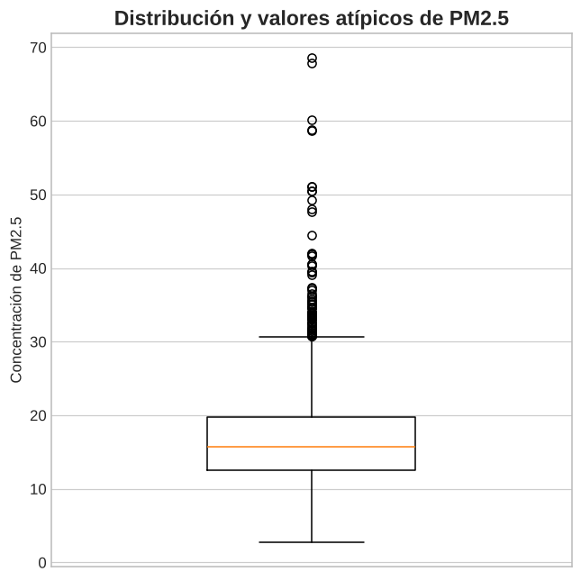
Interpretación
PM2.5 tiene 74 atípicos (3,7 %), también solo valores altos. Que se concentren en pocas estaciones apunta a fuentes locales y no a un problema generalizado.
Valores atípicos de variables meteorológicas#
meteorologicas = df[df["Variable"].isin(["TAire", "HAire", "VViento", "P", "PLiquida", "RGlobal", "RUVb"])]
outliers_meteorologicas = meteorologicas.groupby("Variable", as_index=False).agg(Q1=("Promedio", lambda s: s.quantile(0.25)), Q3=("Promedio", lambda s: s.quantile(0.75)))
outliers_meteorologicas["IQR"] = outliers_meteorologicas["Q3"] - outliers_meteorologicas["Q1"]
outliers_meteorologicas["Limite_inferior"] = outliers_meteorologicas["Q1"] - 1.5 * outliers_meteorologicas["IQR"]
outliers_meteorologicas["Limite_superior"] = outliers_meteorologicas["Q3"] + 1.5 * outliers_meteorologicas["IQR"]
tabla(outliers_meteorologicas, ["Variable", "Primer cuartil", "Tercer cuartil", "Rango IQR", "Límite inferior", "Límite superior"])
| Variable | Primer cuartil | Tercer cuartil | Rango IQR | Límite inferior | Límite superior |
|---|---|---|---|---|---|
| HAire | 62.050000 | 76.350000 | 14.300000 | 40.600000 | 97.800000 |
| P | 629.900000 | 755.500000 | 125.600000 | 441.500000 | 943.900000 |
| PLiquida | 0.200000 | 3.400000 | 3.200000 | -4.600000 | 8.200000 |
| RGlobal | 156.880000 | 206.400000 | 49.530000 | 82.590000 | 280.690000 |
| RUVb | 1.900000 | 205.850000 | 203.950000 | -304.030000 | 511.780000 |
| TAire | 20.600000 | 25.000000 | 4.400000 | 14.000000 | 31.600000 |
| VViento | 0.900000 | 1.700000 | 0.800000 | -0.300000 | 2.900000 |
orden_met = sorted(meteorologicas["Variable"].unique())
fig, ax = plt.subplots()
ax.boxplot([meteorologicas.loc[meteorologicas["Variable"] == v, "Promedio"].dropna() for v in orden_met])
ax.set_xticks(range(1, len(orden_met) + 1))
ax.set_xticklabels(orden_met)
ax.set_title("Distribución y valores atípicos de las variables meteorológicas", fontweight="bold"); ax.set_xlabel("Variable meteorológica"); ax.set_ylabel("Valor registrado")
plt.xticks(rotation=45, ha="right")
plt.tight_layout(); plt.show()
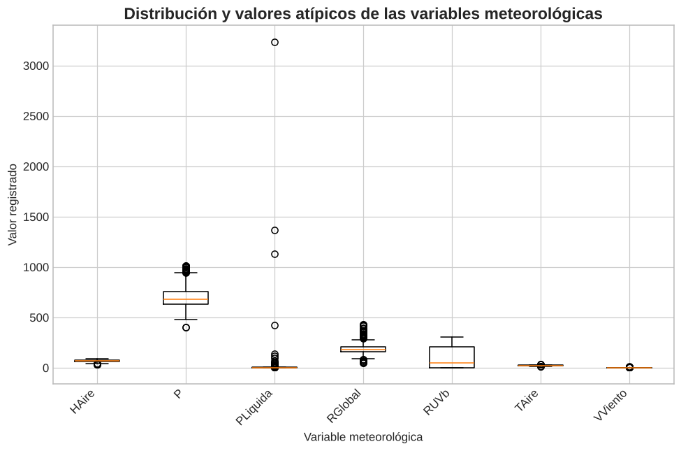
Interpretación
La presión tiene atípicos altos, que son los registros en hPa. La precipitación tiene valores extremos muy lejanos de la caja (acumulados). El viento tiene pocos atípicos.
Los atípicos no se eliminan: pueden ser episodios reales de contaminación. Las excepciones son los errores demostrables (presión en hPa, representatividad mayor a 100 %), que deben corregirse en la fuente.
1.10 Resumen estadístico general#
variables_resumen = df[df["Variable"].isin(["PM10", "PM2.5", "SO2", "NO2", "O3", "TAire", "HAire", "VViento", "P", "PLiquida", "RGlobal", "RUVb"])].groupby("Variable", as_index=False).agg(N=("Promedio", "count"), Mínimo=("Promedio", "min"), Q1=("Promedio", lambda s: s.quantile(0.25)), Mediana=("Promedio", "median"), Media=("Promedio", "mean"), Q3=("Promedio", lambda s: s.quantile(0.75)), Máximo=("Promedio", "max"))
tabla(variables_resumen, ["Variable", "N", "Mínimo", "Q1", "Mediana", "Media", "Q3", "Máximo"])
| Variable | N | Mínimo | Q1 | Mediana | Media | Q3 | Máximo |
|---|---|---|---|---|---|---|---|
| HAire | 75 | 33.100000 | 62.050000 | 71.800000 | 66.090000 | 76.350000 | 92.000000 |
| NO2 | 644 | 0.500000 | 16.500000 | 26.000000 | 26.460000 | 35.600000 | 65.600000 |
| O3 | 827 | 2.000000 | 19.800000 | 25.700000 | 26.150000 | 31.800000 | 65.800000 |
| P | 673 | 399.100000 | 629.900000 | 677.600000 | 701.680000 | 755.500000 | 1010.400000 |
| PLiquida | 927 | 0.100000 | 0.200000 | 1.400000 | 9.770000 | 3.400000 | 3236.700000 |
| PM10 | 2984 | 4.600000 | 27.000000 | 34.600000 | 37.130000 | 44.800000 | 162.300000 |
| PM2.5 | 1984 | 2.700000 | 12.500000 | 15.700000 | 16.840000 | 19.800000 | 68.600000 |
| RGlobal | 600 | 48.300000 | 156.880000 | 178.450000 | 185.640000 | 206.400000 | 431.300000 |
| RUVb | 66 | 0.600000 | 1.900000 | 46.100000 | 112.400000 | 205.850000 | 303.800000 |
| SO2 | 1066 | 0.100000 | 3.400000 | 6.000000 | 9.430000 | 11.000000 | 91.710000 |
| TAire | 73 | 13.400000 | 20.600000 | 22.300000 | 22.620000 | 25.000000 | 33.500000 |
| VViento | 1254 | 0.100000 | 0.900000 | 1.200000 | 1.370000 | 1.700000 | 10.200000 |
Interpretación
Esta tabla resume las variables principales en un solo lugar y cierra el análisis descriptivo.
1.11 Variable objetivo: excedencia diaria de PM2.5#
Objetivo específico 2: caracterizar la variable que predecirá el modelo.
El modelo del proyecto responderá: ¿una estación registrará en el año al menos un día con PM2.5 por encima del límite diario de la Resolución 2254 de 2017? Antes de definirla hay que verificar qué mide exactamente la columna Excedencias limite actual en cada tiempo de exposición.
pm25["Excede"] = pm25["Excedencias limite actual"] > 0
verificacion = pm25.groupby("Tiempo de exposición (horas)").agg(
Registros=("Excede", "size"),
Porcentaje_que_excede=("Excede", lambda s: s.mean() * 100),
Maximo_sin_excedencia=("Máximo", lambda s: s[~pm25.loc[s.index, "Excede"]].max()),
).reset_index()
tabla(verificacion, ["Exposición (h)", "Registros", "% que excede", "Máximo sin excedencia (µg/m³)"], decimales=1)
| Exposición (h) | Registros | % que excede | Máximo sin excedencia (µg/m³) |
|---|---|---|---|
| 1 | 840 | 77.700000 | 3608.500000 |
| 24 | 1144 | 47.900000 | 50.200000 |
Interpretación
En los registros de 24 horas ninguna estación sin excedencias supera 50,2 µg/m³, lo que coincide con el límite diario de la norma. En los de 1 hora, en cambio, hay estaciones con máximos de 3.608 µg/m³ que figuran sin excedencias: la norma no define un límite horario para PM2.5 y esa columna no es confiable en esos registros.
Decisión: la variable objetivo se construye solo con los registros de 24 horas.
pm25_24h = pm25[pm25["Tiempo de exposición (horas)"] == 24].copy()
pm25_24h["Excede"] = pm25_24h["Excede"].astype(int)
print("Registros:", len(pm25_24h), "| Estaciones:", pm25_24h["Estación"].nunique())
balance = pm25_24h["Excede"].value_counts().rename_axis("Excede").reset_index(name="Registros")
balance["Porcentaje"] = balance["Registros"] / balance["Registros"].sum() * 100
tabla(balance, ["Excede (1 = sí)", "Registros", "Porcentaje"], decimales=1)
Registros: 1144 | Estaciones: 383
| Excede (1 = sí) | Registros | Porcentaje |
|---|---|---|
| 0 | 596 | 52.100000 |
| 1 | 548 | 47.900000 |
Interpretación
La variable objetivo tiene 1.144 registros de 383 estaciones, y el 47,9 % excede el límite. Las clases están balanceadas, así que el modelo no necesitará técnicas de sobremuestreo y la exactitud será una métrica razonable (junto con el AUC y el recall).
fig, ax = plt.subplots()
for valor, color, etiqueta in [(0, "#9e9e9e", "No excede"), (1, "#c62828", "Excede")]:
d = pm25_24h[pm25_24h["Excede"] == valor]
ax.scatter(d["Año"] + np.random.uniform(-0.25, 0.25, len(d)), d["Máximo"], s=12, alpha=0.6, color=color, label=etiqueta)
ax.step([2010.5, 2018.5, 2024.5], [50, 37, 37], where="post", color="black", linewidth=1.5, label="Límite diario (Res. 2254/2017)")
ax.set_ylim(0, 150); ax.set_xticks(range(2011, 2025))
ax.set_title("Máximo diario de PM2.5 y límite de la norma", fontweight="bold")
ax.set_xlabel("Año"); ax.set_ylabel("Máximo diario de PM2.5 (µg/m³)")
plt.xticks(rotation=45, ha="right"); ax.legend(loc="upper left"); plt.tight_layout(); plt.show()
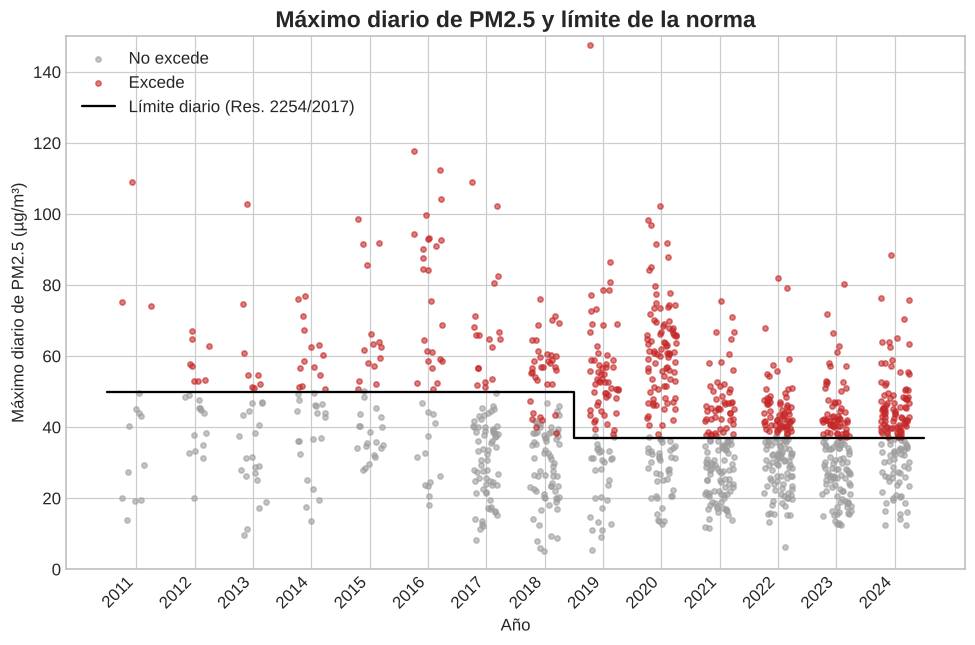
Interpretación
El gráfico confirma la definición: los registros que exceden (rojo) están por encima de la línea del límite y los que no exceden (gris) por debajo. El límite bajó de 50 a 37 µg/m³ a mediados de 2018, cuando entró en vigor el nivel más estricto de la norma. Por eso una misma concentración puede ser excedencia después de 2018 y no antes.
por_anio = pm25_24h.groupby("Año").agg(Tasa=("Excede", lambda s: s.mean() * 100), Registros=("Excede", "size")).reset_index()
fig, ax = plt.subplots()
ax.bar(por_anio["Año"].astype(str), por_anio["Tasa"], color="#595959")
for x, t, n in zip(por_anio["Año"].astype(str), por_anio["Tasa"], por_anio["Registros"]):
ax.text(x, t + 1.5, f"{t:.0f}%\n(n={n})", ha="center", fontsize=8)
ax.set_ylim(0, 100); ax.set_title("Porcentaje de estaciones que exceden el límite por año", fontweight="bold")
ax.set_xlabel("Año"); ax.set_ylabel("Estaciones que exceden (%)")
plt.xticks(rotation=45, ha="right"); plt.tight_layout(); plt.show()
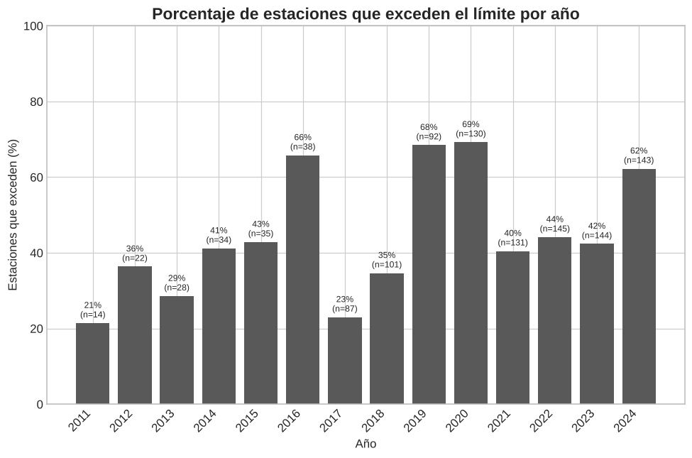
Interpretación
La tasa de excedencia no tiene una tendencia clara: oscila entre 21 % (2011) y 69 % (2020). Los picos de 2016, 2019–2020 y 2024 sugieren años con episodios de contaminación más frecuentes, que podrían relacionarse con condiciones meteorológicas o incendios; el dataset no permite confirmarlo.
Dos efectos complican la lectura: entre 2011 y 2016 hay pocas estaciones (14 a 38), y en 2018 el límite se volvió más estricto. A pesar de que el promedio de PM2.5 bajó (sección 1.6), los días con excedencias siguen siendo frecuentes: mejorar el promedio no elimina los episodios críticos.
por_tipo = pm25_24h.groupby("Tipo de Estación").agg(Tasa=("Excede", lambda s: s.mean() * 100), n=("Excede", "size")).reset_index()
tabla(por_tipo, ["Tipo de estación", "% que excede", "Registros"], decimales=1)
| Tipo de estación | % que excede | Registros |
|---|---|---|
| Fija | 52.400000 | 987 |
| Indicativa | 19.700000 | 157 |
Interpretación
Las estaciones fijas exceden con mucha más frecuencia (52 %) que las indicativas (20 %). Las fijas miden todo el año y suelen estar en zonas urbanas críticas; las indicativas son campañas cortas, con menos días para registrar una excedencia.
por_depto = pm25_24h.groupby("Departamento_norm").agg(Tasa=("Excede", lambda s: s.mean() * 100), n=("Excede", "size")).reset_index()
por_depto = por_depto[por_depto["n"] >= 20]
barras_h(por_depto, "Departamento_norm", "Tasa", "Porcentaje de registros que exceden el límite de PM2.5",
"Registros que exceden (%)", "Departamento", subtitulo="Departamentos con al menos 20 registros", alto=6, dec=0)
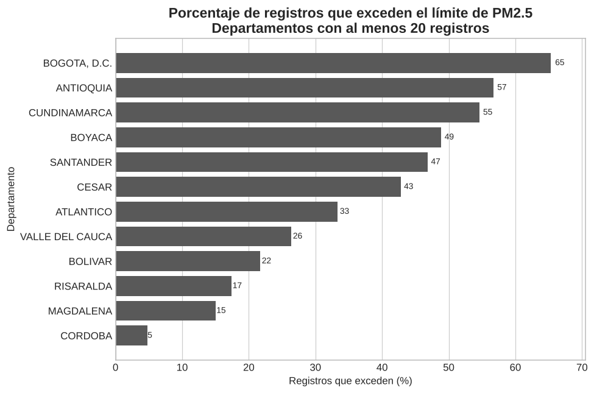
Interpretación
Hay un contraste geográfico claro. Bogotá (65 %), Antioquia (57 %) y Cundinamarca (55 %) exceden con frecuencia, mientras que Córdoba (5 %), Magdalena (15 %) y Bolívar (22 %) casi no lo hacen.
Una explicación física plausible: las ciudades andinas están en valles o altiplanos donde las inversiones térmicas y el poco viento atrapan los contaminantes, mientras que en la costa Caribe los vientos alisios favorecen la dispersión. La ubicación será uno de los predictores más importantes del modelo.
estaciones = pm25_24h.groupby("Estación").agg(Latitud=("Latitud", "mean"), Longitud=("Longitud", "mean"),
Tasa=("Excede", "mean"), n=("Excede", "size")).reset_index()
fig, ax = plt.subplots(figsize=(7, 8))
sc = ax.scatter(estaciones["Longitud"], estaciones["Latitud"], c=estaciones["Tasa"] * 100, cmap="Reds",
s=15 + estaciones["n"] * 4, edgecolor="#555555", linewidth=0.4, vmin=0, vmax=100)
plt.colorbar(sc, ax=ax, shrink=0.7, label="Años con excedencia (%)")
ax.set_title("Estaciones de PM2.5 según frecuencia de excedencia", fontweight="bold")
ax.set_xlabel("Longitud"); ax.set_ylabel("Latitud"); ax.set_aspect("equal"); plt.tight_layout(); plt.show()
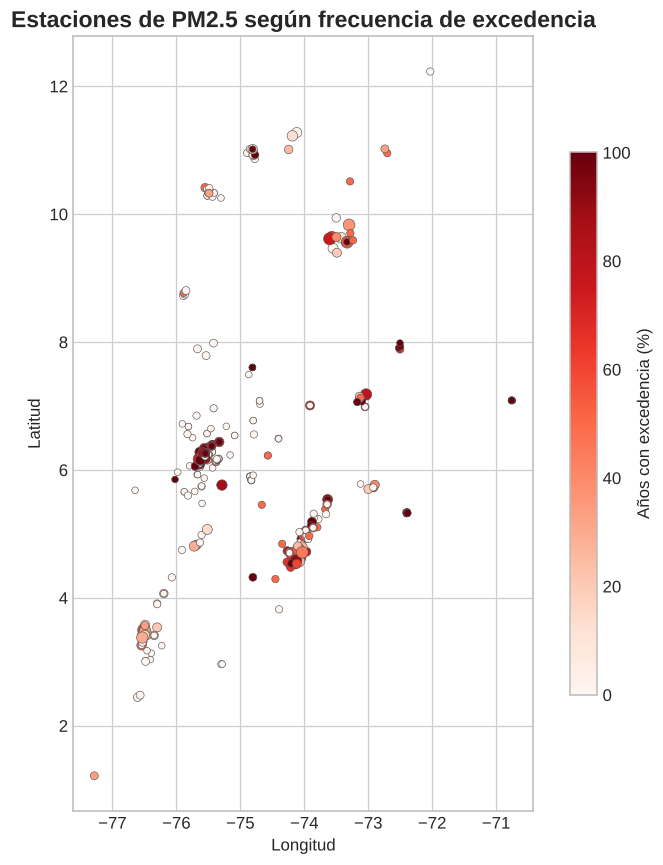
Interpretación
El mapa muestra el mismo patrón: los puntos rojos intensos se concentran en el centro andino (Bogotá, Valle de Aburrá) y los claros en el norte (Caribe) y el suroccidente. El tamaño del punto indica cuántos años reportó la estación.
pm25_24h["Cuartil_datos"] = pd.qcut(pm25_24h["No. de datos"], 4, labels=["Q1 (menos días)", "Q2", "Q3", "Q4 (más días)"])
esfuerzo = pm25_24h.groupby("Cuartil_datos", observed=True).agg(
Dias_medidos=("No. de datos", "median"), Tasa=("Excede", lambda s: s.mean() * 100), n=("Excede", "size")).reset_index()
tabla(esfuerzo, ["Cuartil de días medidos", "Mediana de días medidos", "% que excede", "Registros"], decimales=1)
| Cuartil de días medidos | Mediana de días medidos | % que excede | Registros |
|---|---|---|---|
| Q1 (menos días) | 42.000000 | 21.100000 | 289 |
| Q2 | 121.000000 | 38.200000 | 283 |
| Q3 | 304.000000 | 53.500000 | 286 |
| Q4 (más días) | 355.000000 | 79.000000 | 286 |
Interpretación
Este es el hallazgo más importante para el modelo. Las estaciones que midieron pocos días (Q1, mediana de 42 días) exceden en el 21 % de los casos, y las que midieron casi todo el año (Q4) en el 79 %. Mientras más días se mide, más probable es captar al menos un día malo.
Precaución
La variable objetivo depende del esfuerzo de medición y no solo de la calidad del aire. El modelo debe incluir No. de datos (o la representatividad) como predictor de control. Si no, confundirá «estación que mide mucho» con «estación contaminada».
fig, ax = plt.subplots(figsize=(6, 5))
ax.boxplot([pm25_24h.loc[pm25_24h["Excede"] == 0, "Promedio"], pm25_24h.loc[pm25_24h["Excede"] == 1, "Promedio"]],
widths=0.5)
ax.set_xticks([1, 2], ["No excede", "Excede"])
ax.set_title("Promedio anual de PM2.5 según excedencia", fontweight="bold")
ax.set_ylabel("Promedio anual de PM2.5 (µg/m³)"); plt.tight_layout(); plt.show()
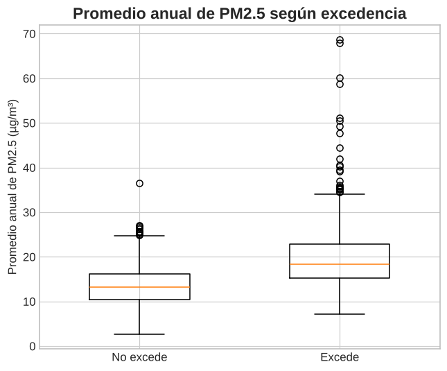
Interpretación
Las estaciones que exceden tienen un promedio anual mayor (mediana de 18,4 frente a 13,1 µg/m³), pero las cajas se solapan: hay estaciones con promedio bajo que igual tienen días críticos. El promedio anual por sí solo no basta para anticipar las excedencias.
Precaución
Promedio, Mediana, Percentil 98, Máximo, Días de excedencias y Porcentaje excedencias limite actual de PM2.5 se calculan con las mismas mediciones que definen la excedencia. Usarlas como predictores sería fuga de información (data leakage): el modelo acertaría en el EDA pero sería inútil en la práctica.
Predictores candidatos para el modelo#
Variable |
Uso |
Razón |
|---|---|---|
Latitud, Longitud, Departamento |
✅ Incluir |
Fuerte contraste andino–Caribe |
Tipo de estación |
✅ Incluir |
Fijas 52 % vs. indicativas 20 % |
No. de datos, Representatividad |
✅ Incluir (control) |
Controlan el esfuerzo de medición |
Año |
✅ Incluir |
Captura el cambio de límite (2018) y la evolución de la red |
Autoridad ambiental |
⚠️ Evaluar |
Puede repetir la información de ubicación |
Promedio, Mediana, P98, Máximo, Días de excedencias de PM2.5 |
❌ Excluir |
Fuga de información |
Meteorología de la misma estación |
⚠️ Evaluar |
Aporta física, pero solo ~30 % de las estaciones la mide |
Interpretación
Con estos predictores, una prueba rápida con un bosque aleatorio y validación por estación (las estaciones de entrenamiento y de prueba son distintas) alcanzó un AUC de 0,81. El problema es viable; la etapa de modelado deberá comparar algoritmos, ajustar hiperparámetros y evaluar qué aporta la meteorología.